B4 · GPT-6 Astra · attempt TtX2wXF
Batch tb8 · job tb8_B_EXP23000279_rep1_230309_gpt-6-astra · trial B_EXP23000279_rep1_230309__TtX2wXF. Long tool outputs are cut at 6,000 characters.
0.38
24.2
$18.03
149
127
task prompt (instruction.md)
<environment_context> <cwd>/task</cwd> <shell>bash</shell> <current_date>2026-11-06</current_date> <timezone>Etc/UTC</timezone> <filesystem><workspace_roots><root>/task</root></workspace_roots><permission_profile type="disabled"><file_system type="unrestricted" /></permission_profile></filesystem> </environment_context>
user message
# Caspase-3/7 assay in WT vs PGRN-KO iPSC-derived neurons: plate acquired 09-Mar-2023
You are the analyst for this experiment: analyse the plate, answer the plan's question, and recommend the next step.
## Inputs (read-only)
| Path | Content |
|---|---|
| `/task/inputs/plan.md` | The scientist's notebook plan for this run: background, objective, materials, procedure, plate maps |
| `/task/inputs/plate_layout.csv` | One row per FCS file: `file, well, sample, genotype, treatment`. Values are the scientist's plate-map wording, from the plan's "Run flow" plate map (first row = A, second row = B) |
| `/task/inputs/start.flow` | Cytoflow workflow with the Import step configured: one tube per FCS file, conditions `well`, `sample`, `genotype`, `treatment` |
| `/task/inputs/raw/` | 18 FCS files (Attune NxT, FCS 3.1, acquired 09-Mar-2023) |
## Environment
- **Software.** All gating, any colour correction and all statistics must be done in **Cytoflow 1.3.2** on screen, through `cu`.
- **Terminal.** It has no flow-cytometry libraries. Use it only to read inputs, tabulate CSVs exported from Cytoflow, plot from them, and write the deliverables.
- **Open the start workflow.** File → Open → `/task/inputs/start.flow` (use `cu paste` for the path), then answer "Yes" to run it. Loading takes about 40 s.
- **Import step.** Leave "Events per sample" unset: final counts must use all events.
- **Channel names.** The names shown on screen are the labels stored inside the FCS files. They may be out of date.
- **Saving.** Save the workflow from Cytoflow (File → Save) as `/task/outputs/workflow.flow`. Save again after your last edit.
- **Budget.** About 5 hours.
## Deliverables (all in `/task/outputs/`)
CSV files must be comma-separated, UTF-8, with a header row. Use the exact file names, column names and allowed values below.
### 1. `workflow.flow`
- The saved Cytoflow workflow.
- Every population in `counts.csv` except `all_events` must be a gate operation in this workflow with exactly the same name.
- Re-applying the saved workflow to the raw files must reproduce the counts in `counts.csv`.
### 2. `counts.csv`
Columns, in order: `file, well, population, role, parent, count, pct_of_parent`
- **One row per file × population**, for all 18 files and the same set of populations in every file.
- **The `all_events` row.** Each file has one row with `population` = `all_events`, `role` = `other`, `parent` = `none`, and `pct_of_parent` empty.
- **`role`** ∈ {`cells`, `singlets`, `live`, `marker_positive`, `other`}.
- `cells`: the main cell population on scatter.
- `singlets`: single cells.
- `live`: viable cells.
- `marker_positive`: the population carrying your primary readout.
- `other`: any other population.
- Each of `cells`, `singlets`, `live` and `marker_positive` must be assigned to exactly one population, the same one in every file.
- **`parent`**: the name of the parent population (`all_events` for the first gate).
- **`count`**: integer event count from Cytoflow statistics.
- **`pct_of_parent`**: 100 × count / parent count.
### 3. `flags.csv`
Columns: `file, well, issue_type, evidence, decision`
- One row per file, for all 18 files. Flag any well whose data should not be used, with evidence.
- `issue_type` ∈ {`none`, `clog`, `ran_dry`, `too_few_events`, `saturation`, `bad_control`, `mislabel`, `other`}
- `decision` ∈ {`keep`, `keep_with_note`, `exclude`}
- `evidence` is required unless `issue_type` = `none`. It must cite at least one number measured from the data.
### 4. `condition_summary.csv`
Columns: `condition, wells, n_wells_used, mean, sd, metric_definition, normalisation_applied`
- **One row per condition.** You name the conditions. If you report more than one metric, give each condition–metric pair its own row with a unique `condition` name.
- **`wells`**: the plate wells used, separated by `;` (e.g. `A7;A8`).
- **`n_wells_used`**: integer.
- **`mean`**: number. **`sd`**: number, or empty when `n_wells_used` = 1.
- **`metric_definition`**: the metric in terms of your population names (numerator / denominator).
- **`normalisation_applied`**: `none`, or the exact formula you applied.
### 5. `figure.png`
The main result chart.
### 6. `report.md`
These headings, in this order:
1. `## Question`
2. `## Methods`
3. `## Results`
4. `## Conclusion`
5. `## Caveats`
6. `## Recommendation`
### 7. `answer.json`
```
{
"question": "<the question from the plan>",
"comparisons": [
{"comparison": "<name>", "a": "<condition from condition_summary.csv>", "b": "<condition from condition_summary.csv>",
"direction": "increase|decrease|no_clear_change", "magnitude": "<text with number>", "confidence": "high|medium|low"}
],
"overall_answer": "yes: ... | partial: ... | no: ...",
"assay_verdict": "fit_for_purpose|needs_optimisation|not_fit_for_purpose",
"next_action": "<one ACTION>",
"next_change": {"what": str, "from": str, "to": str, "why": str},
"excluded_wells": ["<wells with decision = exclude in flags.csv>"],
"caveats": ["..."]
}
```
Rules for `answer.json`:
- `comparisons` has at least 1 item. `a` and `b` must exactly match `condition` values in `condition_summary.csv`. `direction` describes b relative to a.
- `overall_answer` starts with `yes:`, `partial:` or `no:`.
- ACTION ∈ {`proceed_as_planned`, `repeat_unchanged`, `repeat_with_change`, `optimise_reagent_or_setting`, `change_treatment_or_timing`, `switch_assay`, `stop`}.
- `next_change`: the change you recommend, as an object: `what` (the step, reagent or condition to change), `from` (its value as run), `to` (the value you recommend) and `why`. Use empty strings if you recommend no change.
- `excluded_wells` must equal the set of wells marked `exclude` in `flags.csv`.
---
## How you operate this computer
You work from a **terminal** (bash, working directory `/task`). The analysis program, **Cytoflow 1.3.2**, is already running on a virtual screen (1440×900). You see and control that screen with the `cu` command:
| Command | What it does |
|---|---|
| `cu screenshot /tmp/screen.png` | Save a screenshot. Then **open/view the image file** to see the screen. |
| `cu click X Y` · `cu click X Y right` · `cu click X Y double` | Mouse click at pixel X,Y |
| `cu drag X1 Y1 X2 Y2` · `cu move X Y` · `cu scroll X Y down 3` | Drag, move, scroll |
| `cu type "text"` · `cu paste "text"` · `cu key ctrl+s` | Keyboard (use `cu paste` for file paths) |
Take a fresh screenshot after actions to check what happened.
- **Cytoflow.** If a "Welcome to Cytoflow!" dialog is showing, close it. In file dialogs, paste the full path (e.g. `/task/inputs/start.flow`) into the *File name* box.
- **Gating must be done in Cytoflow on screen.** Do not install or use flow-cytometry libraries (flowkit, flowio, fcsparser, FlowCytometryTools, the cytoflow Python API, etc.) to gate or count events. Python (numpy, pandas, matplotlib, openpyxl) is available for working with exported tables and writing reports.
- **Inputs** are in `/task/inputs/` (read-only). **Write every deliverable to `/task/outputs/`.** Only that folder is collected for grading.
- **Limits.** There is no limit on the number of actions; the only limit is the time budget above. Save `workflow.flow` and your output files early and often.
text(ALL_TOOLS.filter(x=>/exec|computer|terminal/.test(x.name+" "+x.description)));
text(await tools.exec_command({cmd:"pwd && rg --files /task/inputs && cat /task/inputs/plan.md && cat /task/inputs/plate_layout.csv","max_output_tokens":14000}));
text(await tools.exec_command({cmd:"cu screenshot /tmp/initial.png","max_output_tokens":2000}));
image((await tools.view_image({path:"/tmp/initial.png"})).image_url);
Script completed Wall time 0.1 seconds Output:
[{"name":"apply_patch","description":"The `apply_patch` tool can be used to edit files. This is a FREEFORM tool, so do not wrap the patch in JSON.\n\nexec tool declaration:\n```ts\ndeclare const tools: { apply_patch(input: string): Promise<unknown>; };\n```"},{"name":"clock__curr_time","description":"Return the current time in UTC.\n\nTools for reading and waiting on time.\n\nexec tool declaration:\n```ts\ndeclare const tools: { clock__curr_time(args: {}): Promise<{\n // Current UTC time formatted as YYYY-MM-DD HH:MM:SS UTC.\n current_time: string;\n}>; };\n```"},{"name":"create_goal","description":"Create a goal only when explicitly requested by the user or system/developer instructions; do not infer goals from ordinary tasks.\nSet token_budget only when an explicit token budget is requested. Fails if an unfinished goal exists; use update_goal only for status.\n\nexec tool declaration:\n```ts\ndeclare const tools: { create_goal(args: {\n // Required. The concrete objective to start pursuing. This starts a new active goal when no goal exists or replaces the current goal when it is complete.\n objective: string;\n // Positive token budget for the new goal. Omit unless explicitly requested.\n token_budget?: number;\n}): Promise<unknown>; };\n```"},{"name":"exec_command","description":"Runs a command in a PTY, returning output or a session ID for ongoing interaction.\n\nexec tool declaration:\n```ts\ndeclare const tools: { exec_command(args: {\n // Shell command to execute.\n cmd: string;\n // User-facing approval question for `require_escalated`; omit otherwise.\n justification?: string;\n // True runs the shell with -l/-i semantics; false disables them. Defaults to true.\n login?: boolean;\n // Output token budget. Defaults to 10000 tokens; larger requests may be capped by policy.\n max_output_tokens?: number;\n // Reusable approval prefix for `cmd`, only with `sandbox_permissions: \"require_escalated\"`; for example [\"git\", \"pull\"].\n prefix_rule?: Array<string>;\n // Per-command sandbox override. Defaults to `use_default`; use `require_escalated` for unsandboxed execution.\n sandbox_permissions?: \"use_default\" | \"require_escalated\";\n // Shell binary to launch. Defaults to the user's default shell.\n shell?: string;\n // True allocates a PTY for the command; false or omitted uses plain pipes.\n tty?: boolean;\n // Working directory for the command. Defaults to the turn cwd.\n workdir?: string;\n // Wait before yielding output. Defaults to 10000 ms; effective range is 250-30000 ms.\n yield_time_ms?: number;\n}): Promise<{\n // Chunk identifier included when the response reports one.\n chunk_id?: string;\n // Process exit code when the command finished during this call.\n exit_code?: number;\n // Approximate token count before output truncation.\n original_token_count?: number;\n // Command output text, possibly truncated.\n output: string;\n // Session identifier to pass to write_stdin when the process is still running.\n session_id?: number;\n // Elapsed wall time spent waiting for output in seconds.\n wall_time_seconds: number;\n}>; };\n```"},{"name":"get_goal","description":"Get the current goal for this thread, including status, budgets, token and elapsed-time usage, and remaining token budget.\n\nexec tool declaration:\n```ts\ndeclare const tools: { get_goal(args: {}): Promise<unknown>; };\n```"},{"name":"list_mcp_resource_templates","description":"Lists resource templates provided by MCP servers. Parameterized resource templates allow servers to share data that takes parameters and provides context to language models, such as files, database schemas, or application-specific information. Prefer resource templates over web search when possible.\n\nexec tool declaration:\n```ts\ndeclare const tools: { list_mcp_resource_templates(args: {\n // Opaque cursor from a previous list_mcp_resource_templates call; omit for the first page.\n cursor?: string;\n // MCP server name. Omit to list resource templates from every configured server.\n server?: string;\n}): Promise<unknown>; };\n```"},{"name":"list_mcp_resources","description":"Lists resources provided by MCP servers. Resources allow servers to share data that provides context to language models, such as files, database schemas, or application-specific information. Prefer resources over web search when possible.\n\nexec tool declaration:\n```ts\ndeclare const tools: { list_mcp_resources(args: {\n // Opaque cursor from a previous list_mcp_resources call; omit for the first page.\n cursor?: string;\n // MCP server name. Omit to list resources from every configured server.\n server?: string;\n}): Promise<unknown>; };\n```"},{"name":"read_mcp_resource","description":"Read a specific resource from an MCP server given the server name and resource URI.\n\nexec tool declaration:\n```ts\ndeclare const tools: { read_mcp_resource(args: {\n // MCP server name exactly as configured. Must match the 'server' field returned by list_mcp_resources.\n server: string;\n // Resource URI to read. Must be one of the URIs returned by list_mcp_resources.\n uri: string;\n}): Promise<unknown>; };\n```"},{"name":"update_goal","description":"Update the existing goal.\nSet status to `paused` only at the user's explicit request to pause this goal, never on your own initiative. Ask if unclear; a later resume revokes that request. Report the returned status and stop goal work. Budget limits take precedence over pausing.\nSet status to `complete` only when the objective has actually been achieved and no required work remains.\nSet status to `blocked` only when the same blocking condition has repeated for at least three consecutive goal turns, counting the original/user-triggered turn and any automatic continuations, and the agent cannot make meaningful progress without user input or an external-state change.\nIf the user resumes a goal that was previously marked `blocked`, treat the resumed run as a fresh blocked a
… [14,062 more characters not shown]{"chunk_id":"a51c17","wall_time_seconds":0.00000344,"exit_code":0,"original_token_count":1518,"output":"/task\n/task/inputs/plan.md\n/task/inputs/start.flow\n/task/inputs/plate_layout.csv\n/task/inputs/raw/Caspase_WT_KO_optimization_caspase_Group_B4.fcs\n/task/inputs/raw/Caspase_WT_KO_optimization_caspase_Group_B8.fcs\n/task/inputs/raw/Caspase_WT_KO_optimization_caspase_Group_A9.fcs\n/task/inputs/raw/Caspase_WT_KO_optimization_caspase_Group_A2.fcs\n/task/inputs/raw/Caspase_WT_KO_optimization_caspase_Group_A12.fcs\n/task/inputs/raw/Caspase_WT_KO_optimization_caspase_Group_A11.fcs\n/task/inputs/raw/Caspase_WT_KO_optimization_caspase_Group_A10.fcs\n/task/inputs/raw/Caspase_WT_KO_optimization_caspase_Group_B11.fcs\n/task/inputs/raw/Caspase_WT_KO_optimization_caspase_Group_B12.fcs\n/task/inputs/raw/Caspase_WT_KO_optimization_caspase_Group_B9.fcs\n/task/inputs/raw/Caspase_WT_KO_optimization_caspase_Group_B10.fcs\n/task/inputs/raw/Caspase_WT_KO_optimization_caspase_Group_B6.fcs\n/task/inputs/raw/Caspase_WT_KO_optimization_caspase_Group_B2.fcs\n/task/inputs/raw/Caspase_WT_KO_optimization_caspase_Group_B7.fcs\n/task/inputs/raw/Caspase_WT_KO_optimization_caspase_Group_A6.fcs\n/task/inputs/raw/Caspase_WT_KO_optimization_caspase_Group_A7.fcs\n/task/inputs/raw/Caspase_WT_KO_optimization_caspase_Group_A8.fcs\n/task/inputs/raw/Caspase_WT_KO_optimization_caspase_Group_A4.fcs\n# EXP23000279 | Caspase Assay in WT and PGRNKO iPSC Derived Neurons\n\nNotebook plan for the run acquired on 2023-03-09. This is the scientist's text as written, up to the start of this run's results.\n\n## DAY 2023-03-09\n\n### Background:\nLoss of function of PGRN has been shown to negatively impact neural cell health reflected by increased cell death and caspase activity.\nCaspases are important mediators of the cell death pathway (apoptosis). Caspases are a group of proteases that result in cleavage of protein substrates subsequently leading to cell disassembly. For the PGRN RNAswap program we will want to measure caspase activity in iPSC derived neurons before and after adding the PGRN RNAswap constructs to ensure that PGRN protein replacement is rescuing the health of neurons. Before testing if AAV-PGRN constructs help restore neural health I will test and optimize the assay on the neurons with no AAV.\n\n### Objective:\nFor first round of experiments will be optimizing the assay. The goal will be to determine if a difference in caspase activity is present in PGRNKOs compared to WT PGP1 neurons. Camptothsesin (topoisomerase inhibitor) will be added.\n\n### Materials:\n- Camptothecin\n- CellEvent Caspase 3/7 reagent\n- DMSO\n- Zombie NIR\n\n### Procedure:\n- Differentiate WT and PGRNKO iPSC into neurons\n- Once cells are sufficiently neuronal can run caspase assay.\n- Add camptothecin Follow plate maps below.\n\n| Dose | for 1 well |\n|---|---|\n| 10uM | 20uL of 250uM stock into 500uL media |\n| 5uM | 10uL of 250uM stock into 500uL media |\n| 2uM | 4uL of 250uM stock into 500uL media |\n| 1uM | 2uL of 250uM stock into 500uL media |\n| DMSO (no treatment controls) | 10uL into 500uL media |\n\n- Incubate with camptothecin for 4.5hrs\n\nWT plate map (as written):\n```\nWT DMSO | WT 5uM camptothecin | WT caspase stain only\nWT no treatment | WT 10uM camptothecin | WT caspase stain only\nWT 1uM camptothecin | WT no stain | WT L/D only\nWT 2uM camptothecin | WT no stain | WT L/D only\n```\n\nKO plate map (as written):\n```\nKO DMSO | KO 5uM camptothecin | KO caspase only\nKO no treatment | KO 10uM camptothecin | KO caspase only\nKO 1uM camptothecin | KO no stain | KO L/D only\nKO 2uM camptothecin | KO no stain | KO L/D only\n```\n\n5. Run flow\n\nFlow plate map (as written; the remaining rows of the table are empty):\n```\nWT no stain | WT no stain | WT caspase only | WT caspase only | WT L/D only | WT L/D only | WT 10uM camptothecin | WT 5uM camptothecin | WT 2uM camptothecin | WT 1uM camptothecin | WT DMSO | WT no treatment\nKO no stain | KO no stain | KO caspase only | KO caspase only | KO L/D only | KO L/D only | KO 10uM camptothecin | KO 5uM camptothecin | KO 2uM camptothecin | KO 1uM camptothecin | KO DMSO | KO no treatment\n```\n\n3. Run CellEvent flow assay\n- Aspirate media and wash with PBS\n- Add 150uL accutase incubate for 5-10min\n- Add 75uL FBS and collect into 96w round bottom plate\n- spin down 200xg for 5min\n- Add 200uL Zombie NIR at 1:500 (4mL PBS+ 8uL Zombie) Incubate for 10min\n- Spin down and remove Zombie stain\n- Add 200uL of Cell Event Caspase 3/7 Detection reagent (1:1000) in flow staining buffer. Incubate for 30min at 37C (4mL +4uL reagent)\n- Analyze the samples without fixing.\nfile,well,sample,genotype,treatment\nCaspase_WT_KO_optimization_caspase_Group_A2.fcs,A2,WT no stain,WT,no stain\nCaspase_WT_KO_optimization_caspase_Group_A4.fcs,A4,WT caspase only,WT,caspase only\nCaspase_WT_KO_optimization_caspase_Group_A6.fcs,A6,WT L/D only,WT,L/D only\nCaspase_WT_KO_optimization_caspase_Group_A7.fcs,A7,WT 10uM camptothecin,WT,10uM camptothecin\nCaspase_WT_KO_optimization_caspase_Group_A8.fcs,A8,WT 5uM camptothecin,WT,5uM camptothecin\nCaspase_WT_KO_optimization_caspase_Group_A9.fcs,A9,WT 2uM camptothecin,WT,2uM camptothecin\nCaspase_WT_KO_optimization_caspase_Group_A10.fcs,A10,WT 1uM camptothecin,WT,1uM camptothecin\nCaspase_WT_KO_optimization_caspase_Group_A11.fcs,A11,WT DMSO,WT,DMSO\nCaspase_WT_KO_optimization_caspase_Group_A12.fcs,A12,WT no treatment,WT,no treatment\nCaspase_WT_KO_optimization_caspase_Group_B2.fcs,B2,KO no stain,KO,no stain\nCaspase_WT_KO_optimization_caspase_Group_B4.fcs,B4,KO caspase only,KO,caspase only\nCaspase_WT_KO_optimization_caspase_Group_B6.fcs,B6,KO L/D only,KO,L/D only\nCaspase_WT_KO_optimization_caspase_Group_B7.fcs,B7,KO 10uM camptothecin,KO,10uM camptothecin\nCaspase_WT_KO_optimization_caspase_Group_B8.fcs,B8,KO 5uM camptothecin,KO,5uM camptothecin\nCaspase_WT_KO_optimization_caspase_Group_B9.fcs,B9,KO 2uM c
… [285 more characters not shown]{"chunk_id":"7cd380","wall_time_seconds":0.00000496,"exit_code":0,"original_token_count":5,"output":"/tmp/initial.png\n"}
text(await tools.exec_command({cmd:"mkdir -p /task/outputs\ncu click 913 493\ncu click 90 69\ncu paste /task/inputs/start.flow\ncu key Return\ncu screenshot /tmp/open.png","max_output_tokens":2000}));
image((await tools.view_image({path:"/tmp/open.png"})).image_url);
Script completed Wall time 1.6 seconds Output:
{"chunk_id":"5067ba","wall_time_seconds":1.451639039,"exit_code":0,"original_token_count":4,"output":"/tmp/open.png\n"}
text(await tools.exec_command({cmd:"cu click 1311 744\ncu screenshot /tmp/run.png","max_output_tokens":1000}));
image((await tools.view_image({path:"/tmp/run.png"})).image_url);
Script completed Wall time 0.2 seconds Output:
{"chunk_id":"928534","wall_time_seconds":0.00000374,"exit_code":0,"original_token_count":4,"output":"/tmp/run.png\n"}
text(await tools.exec_command({cmd:"cu click 749 448","max_output_tokens":1000}));
text(await tools.clock__curr_time({}));
Script completed
Wall time 0.1 seconds
Output:
{"chunk_id":"e2daf9","wall_time_seconds":0.00000326,"exit_code":0,"original_token_count":0,"output":""}
{"current_time":"2026-11-06 00:33:23 UTC"}text(await tools.exec_command({cmd:"cat /task/inputs/start.flow","max_output_tokens":5000}));
text(await tools.web__run({search_query:[{q:"site.thermofisher.com CellEvent Caspase-3/7 Green flow cytometry 488 530 5 uM"},{"q":"site.biolegend.com Zombie NIR excitation emission 719 746"}],response_length:"short"}));
Script completed
Wall time 1.3 seconds
Output:
{"chunk_id":"b15e51","wall_time_seconds":0.00000371,"exit_code":0,"original_token_count":1086,"output":"- !workflow-item;5\n channels: []\n conditions: {}\n current_view: null\n metadata: {}\n operation: !import;4\n channels_list: []\n conditions:\n well: category\n sample: category\n genotype: category\n treatment: category\n events: null\n ignore_v_bool: false\n name_metadata: null\n tubes:\n - !tube;1\n conditions:\n well: 'A2'\n sample: 'WT no stain'\n genotype: 'WT'\n treatment: 'no stain'\n file: '/task/inputs/raw/Caspase_WT_KO_optimization_caspase_Group_A2.fcs'\n - !tube;1\n conditions:\n well: 'A4'\n sample: 'WT caspase only'\n genotype: 'WT'\n treatment: 'caspase only'\n file: '/task/inputs/raw/Caspase_WT_KO_optimization_caspase_Group_A4.fcs'\n - !tube;1\n conditions:\n well: 'A6'\n sample: 'WT L/D only'\n genotype: 'WT'\n treatment: 'L/D only'\n file: '/task/inputs/raw/Caspase_WT_KO_optimization_caspase_Group_A6.fcs'\n - !tube;1\n conditions:\n well: 'A7'\n sample: 'WT 10uM camptothecin'\n genotype: 'WT'\n treatment: '10uM camptothecin'\n file: '/task/inputs/raw/Caspase_WT_KO_optimization_caspase_Group_A7.fcs'\n - !tube;1\n conditions:\n well: 'A8'\n sample: 'WT 5uM camptothecin'\n genotype: 'WT'\n treatment: '5uM camptothecin'\n file: '/task/inputs/raw/Caspase_WT_KO_optimization_caspase_Group_A8.fcs'\n - !tube;1\n conditions:\n well: 'A9'\n sample: 'WT 2uM camptothecin'\n genotype: 'WT'\n treatment: '2uM camptothecin'\n file: '/task/inputs/raw/Caspase_WT_KO_optimization_caspase_Group_A9.fcs'\n - !tube;1\n conditions:\n well: 'A10'\n sample: 'WT 1uM camptothecin'\n genotype: 'WT'\n treatment: '1uM camptothecin'\n file: '/task/inputs/raw/Caspase_WT_KO_optimization_caspase_Group_A10.fcs'\n - !tube;1\n conditions:\n well: 'A11'\n sample: 'WT DMSO'\n genotype: 'WT'\n treatment: 'DMSO'\n file: '/task/inputs/raw/Caspase_WT_KO_optimization_caspase_Group_A11.fcs'\n - !tube;1\n conditions:\n well: 'A12'\n sample: 'WT no treatment'\n genotype: 'WT'\n treatment: 'no treatment'\n file: '/task/inputs/raw/Caspase_WT_KO_optimization_caspase_Group_A12.fcs'\n - !tube;1\n conditions:\n well: 'B2'\n sample: 'KO no stain'\n genotype: 'KO'\n treatment: 'no stain'\n file: '/task/inputs/raw/Caspase_WT_KO_optimization_caspase_Group_B2.fcs'\n - !tube;1\n conditions:\n well: 'B4'\n sample: 'KO caspase only'\n genotype: 'KO'\n treatment: 'caspase only'\n file: '/task/inputs/raw/Caspase_WT_KO_optimization_caspase_Group_B4.fcs'\n - !tube;1\n conditions:\n well: 'B6'\n sample: 'KO L/D only'\n genotype: 'KO'\n treatment: 'L/D only'\n file: '/task/inputs/raw/Caspase_WT_KO_optimization_caspase_Group_B6.fcs'\n - !tube;1\n conditions:\n well: 'B7'\n sample: 'KO 10uM camptothecin'\n genotype: 'KO'\n treatment: '10uM camptothecin'\n file: '/task/inputs/raw/Caspase_WT_KO_optimization_caspase_Group_B7.fcs'\n - !tube;1\n conditions:\n well: 'B8'\n sample: 'KO 5uM camptothecin'\n genotype: 'KO'\n treatment: '5uM camptothecin'\n file: '/task/inputs/raw/Caspase_WT_KO_optimization_caspase_Group_B8.fcs'\n - !tube;1\n conditions:\n well: 'B9'\n sample: 'KO 2uM camptothecin'\n genotype: 'KO'\n treatment: '2uM camptothecin'\n file: '/task/inputs/raw/Caspase_WT_KO_optimization_caspase_Group_B9.fcs'\n - !tube;1\n conditions:\n well: 'B10'\n sample: 'KO 1uM camptothecin'\n genotype: 'KO'\n treatment: '1uM camptothecin'\n file: '/task/inputs/raw/Caspase_WT_KO_optimization_caspase_Group_B10.fcs'\n - !tube;1\n conditions:\n well: 'B11'\n sample: 'KO DMSO'\n genotype: 'KO'\n treatment: 'DMSO'\n file: '/task/inputs/raw/Caspase_WT_KO_optimization_caspase_Group_B11.fcs'\n - !tube;1\n conditions:\n well: 'B12'\n sample: 'KO no treatment'\n genotype: 'KO'\n treatment: 'no treatment'\n file: '/task/inputs/raw/Caspase_WT_KO_optimization_caspase_Group_B12.fcs'\n statistics: {}\n views: []\n"}
Flow Cytometry (https://www.biolegend.com/Files/Images/BioLegend/literature/images/02-0006-06_Multicolor-flow.pdf)
citeturn0search12 [wordlim: 200] Published: last year; Learn more at: biolegend.com/en-us/cell-health-tools ... | Zombie NIR™ | 719 | 746 | 780/60DNA-binding dyes ... When DRAQ5™ intercalates with DNA, its excitation and emission max
max (nm) | Recommended
filter
--- | --- | --- | --- | ---
| Zombie UV387™ | 350 | 387 | 379/28
| Zombie UV™ | 360 | 459 | 450/50
| Zombie Violet™ | 400 | 423 | 450/50
| Zombie Aqua™ | 382 | 516 | 510/50
| Zombie Yellow™ | 396 | 572 | 585/42
| Zombie Green™ | 490 | 515 | 530/30
| Zombie B550™ | 488 | 540 | 530/30
| Zombie YG581™ | 561 | 581 | 575/26 or
585/15
| Zombie Red™ | 600 | 624 | 610/20
| Zombie R718™ | 697 | 711 | 720/45
| Zombie NIR™ | 719 | 746 | 780/60DNA-binding dyes
To avoid this issue, we provide Zombie Dyes, which bind
the amine groups present on proteins. While live cells are
stained to a low degree due to surface proteins, dead cells
will stain much more brightly due to the high abundance of
internal proteins that can be stained once membranes are
compromised.
Learn more at: biolegend.com/en-us/live-dead
| Chemical probe | Excitation
max (nm) | Emission
max (nm) | Recommended
filter
--- | --- | --- | --- | ---
| DAPI
… [12,061 more characters not shown]text(await tools.exec_command({cmd:"cu screenshot /tmp/loaded.png","max_output_tokens":1000}));
image((await tools.view_image({path:"/tmp/loaded.png"})).image_url);
Script completed Wall time 0.1 seconds Output:
{"chunk_id":"dae923","wall_time_seconds":0.00000411,"exit_code":0,"original_token_count":4,"output":"/tmp/loaded.png\n"}
text(await tools.exec_command({cmd:"cu click 238 184\ncu click 22 29\ncu screenshot /tmp/menu.png","max_output_tokens":1000}));
image((await tools.view_image({path:"/tmp/menu.png"})).image_url);
Script completed Wall time 0.3 seconds Output:
{"chunk_id":"d13158","wall_time_seconds":0.09982027,"exit_code":0,"original_token_count":4,"output":"/tmp/menu.png\n"}
text(await tools.exec_command({cmd:"cu click 70 102\ncu paste /task/outputs/workflow.flow\ncu screenshot /tmp/save.png","max_output_tokens":1000}));
image((await tools.view_image({path:"/tmp/save.png"})).image_url);
Script completed Wall time 1.5 seconds Output:
{"chunk_id":"eba5e5","wall_time_seconds":1.32992383,"exit_code":0,"original_token_count":4,"output":"/tmp/save.png\n"}
text(await tools.exec_command({cmd:"cu click 1315 744\ncu click 44 457\ncu screenshot /tmp/polygon.png","max_output_tokens":1000}));
image((await tools.view_image({path:"/tmp/polygon.png"})).image_url);
Script completed Wall time 0.3 seconds Output:
{"chunk_id":"c73768","wall_time_seconds":0.1004859,"exit_code":0,"original_token_count":5,"output":"/tmp/polygon.png\n"}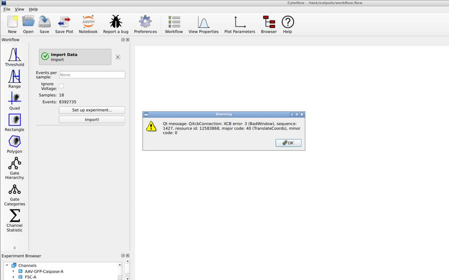
text(await tools.exec_command({cmd:"cu click 923 457\ncu click 46 455\ncu screenshot /tmp/poly2.png","max_output_tokens":1000}));
image((await tools.view_image({path:"/tmp/poly2.png"})).image_url);
Script completed Wall time 0.3 seconds Output:
{"chunk_id":"7fabdb","wall_time_seconds":0.100021649,"exit_code":0,"original_token_count":4,"output":"/tmp/poly2.png\n"}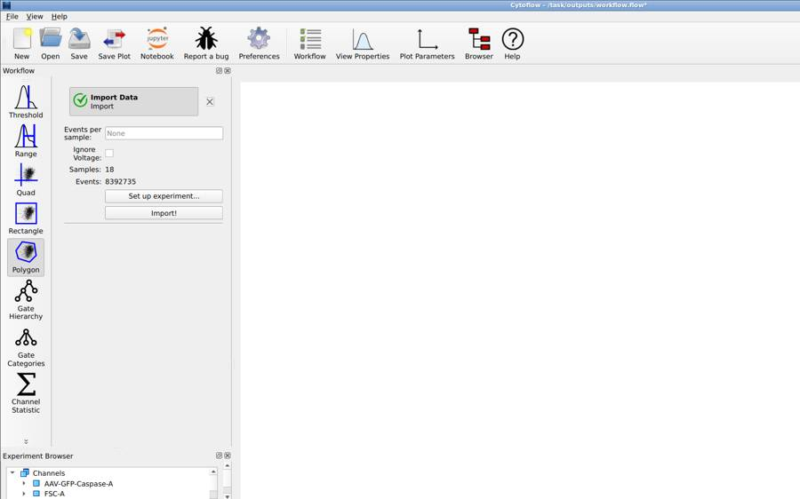
text(await tools.exec_command({cmd:"cu screenshot /tmp/poly3.png","max_output_tokens":1000}));
image((await tools.view_image({path:"/tmp/poly3.png"})).image_url);
Script completed Wall time 0.1 seconds Output:
{"chunk_id":"739e12","wall_time_seconds":0.00000347,"exit_code":0,"original_token_count":4,"output":"/tmp/poly3.png\n"}
text(await tools.exec_command({cmd:"cu click 272 322\ncu type cells\ncu click 354 354\ncu screenshot /tmp/channels.png","max_output_tokens":1000}));
image((await tools.view_image({path:"/tmp/channels.png"})).image_url);
Script completed Wall time 0.4 seconds Output:
{"chunk_id":"a0d9c4","wall_time_seconds":0.22631942,"exit_code":0,"original_token_count":5,"output":"/tmp/channels.png\n"}
text(await tools.exec_command({cmd:"cu click 226 377\ncu click 356 384\ncu key s\ncu key Return\ncu click 657 67\ncu screenshot /tmp/viewprops.png","max_output_tokens":1000}));
image((await tools.view_image({path:"/tmp/viewprops.png"})).image_url);
Script completed Wall time 0.4 seconds Output:
{"chunk_id":"18cce1","wall_time_seconds":0.23154725,"exit_code":0,"original_token_count":5,"output":"/tmp/viewprops.png\n"}
text(await tools.exec_command({cmd:"cu screenshot /tmp/scatter.png","max_output_tokens":1000}));
image((await tools.view_image({path:"/tmp/scatter.png"})).image_url);
Script completed Wall time 0.1 seconds Output:
{"chunk_id":"41a131","wall_time_seconds":0.00000533,"exit_code":0,"original_token_count":5,"output":"/tmp/scatter.png\n"}text(await tools.exec_command({cmd:"cu click 652 74\ncu screenshot /tmp/viewprops2.png","max_output_tokens":1000}));
image((await tools.view_image({path:"/tmp/viewprops2.png"})).image_url);
Script completed Wall time 0.2 seconds Output:
{"chunk_id":"543b5e","wall_time_seconds":0.00000405,"exit_code":0,"original_token_count":5,"output":"/tmp/viewprops2.png\n"}text(await tools.exec_command({cmd:"cu click 61 28\ncu screenshot /tmp/viewmenu.png","max_output_tokens":1000}));
image((await tools.view_image({path:"/tmp/viewmenu.png"})).image_url);
Script completed Wall time 0.2 seconds Output:
{"chunk_id":"aebfe0","wall_time_seconds":0.03750008,"exit_code":0,"original_token_count":5,"output":"/tmp/viewmenu.png\n"}
text(await tools.exec_command({cmd:"cu key Escape\ncu click 693 8 double\ncu screenshot /tmp/resized.png","max_output_tokens":1000}));
image((await tools.view_image({path:"/tmp/resized.png"})).image_url);
Script completed Wall time 0.3 seconds Output:
{"chunk_id":"8a1b0a","wall_time_seconds":0.1352125,"exit_code":0,"original_token_count":5,"output":"/tmp/resized.png\n"}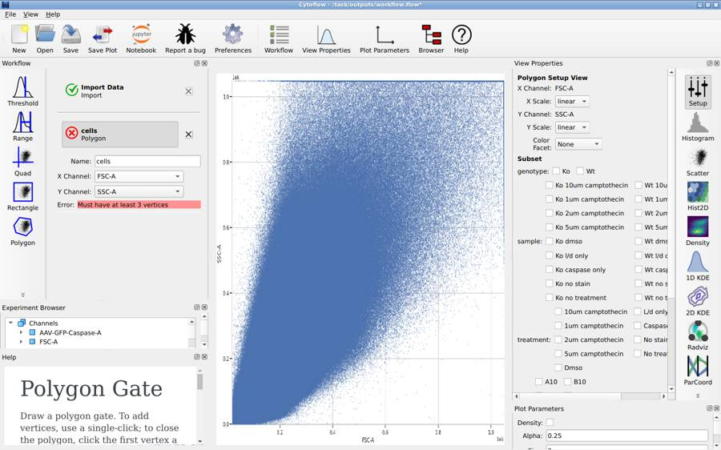
text(await tools.exec_command({cmd:"cu click 1167 202\ncu screenshot /tmp/scales.png","max_output_tokens":1000}));
image((await tools.view_image({path:"/tmp/scales.png"})).image_url);
Script completed Wall time 0.2 seconds Output:
{"chunk_id":"3010de","wall_time_seconds":0.01335717,"exit_code":0,"original_token_count":4,"output":"/tmp/scales.png\n"}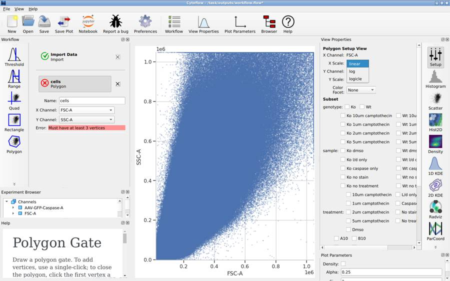
text(await tools.exec_command({cmd:"cu click 1131 227\ncu click 1166 254\ncu key l\ncu key o\ncu key Return\ncu click 1274 706\ncu click 1099 844\ncu screenshot /tmp/logplot.png","max_output_tokens":1000}));
image((await tools.view_image({path:"/tmp/logplot.png"})).image_url);
Script completed Wall time 0.5 seconds Output:
{"chunk_id":"d078ce","wall_time_seconds":0.37240793,"exit_code":0,"original_token_count":5,"output":"/tmp/logplot.png\n"}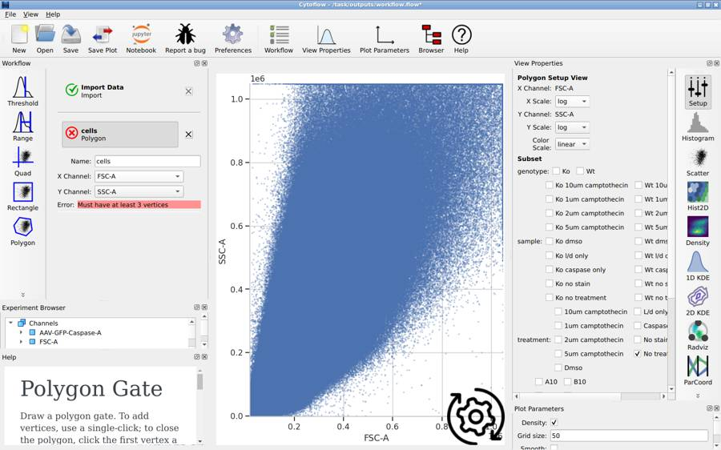
text(await tools.exec_command({cmd:"cu screenshot /tmp/logdone.png","max_output_tokens":1000}));
image((await tools.view_image({path:"/tmp/logdone.png"})).image_url);
Script completed Wall time 0.1 seconds Output:
{"chunk_id":"35d773","wall_time_seconds":0.00000429,"exit_code":0,"original_token_count":5,"output":"/tmp/logdone.png\n"}{
"duration_ms": 10000
}Wall time: 10.0032 seconds Sleep completed.
text(await tools.exec_command({cmd:"cu screenshot /tmp/logdone2.png","max_output_tokens":1000}));
image((await tools.view_image({path:"/tmp/logdone2.png"})).image_url);
Script completed Wall time 0.1 seconds Output:
{"chunk_id":"14da0f","wall_time_seconds":0.00000382,"exit_code":0,"original_token_count":5,"output":"/tmp/logdone2.png\n"}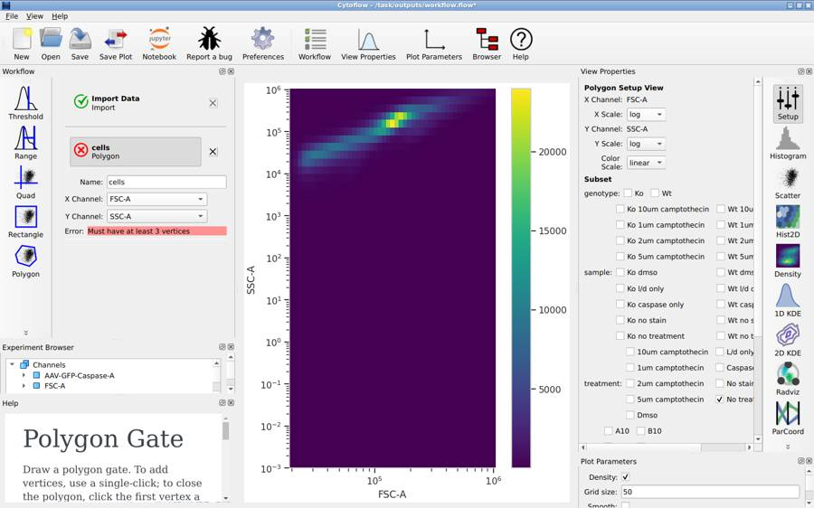
text(await tools.exec_command({cmd:"cu drag 1192 804 1192 530\ncu scroll 1246 849 down 3\ncu screenshot /tmp/plotparams.png","max_output_tokens":1000}));
image((await tools.view_image({path:"/tmp/plotparams.png"})).image_url);
Script completed Wall time 0.4 seconds Output:
{"chunk_id":"2fe22a","wall_time_seconds":0.23724041,"exit_code":0,"original_token_count":5,"output":"/tmp/plotparams.png\n"}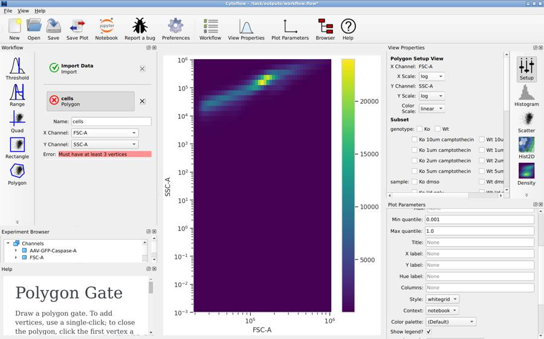
text(await tools.exec_command({cmd:"cu scroll 1246 628 up 3\ncu screenshot /tmp/limits.png","max_output_tokens":1000}));
image((await tools.view_image({path:"/tmp/limits.png"})).image_url);
Script completed Wall time 0.4 seconds Output:
{"chunk_id":"c6c931","wall_time_seconds":0.2035092,"exit_code":0,"original_token_count":4,"output":"/tmp/limits.png\n"}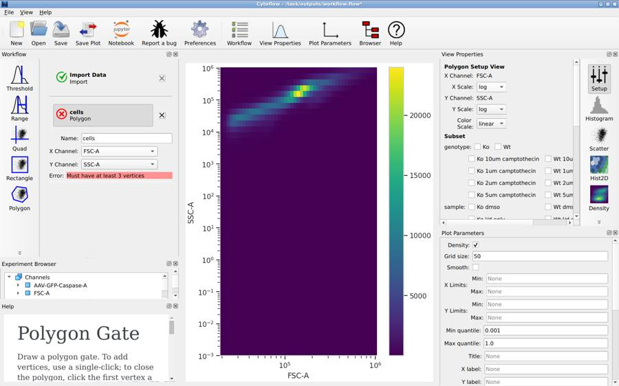
text(await tools.exec_command({cmd:"cu click 1231 648\ncu key ctrl+a\ncu type 10000\ncu click 1231 710\ncu key ctrl+a\ncu type 1000\ncu key Tab\ncu screenshot /tmp/limits_set.png","max_output_tokens":1000}));
image((await tools.view_image({path:"/tmp/limits_set.png"})).image_url);
Script completed Wall time 0.6 seconds Output:
{"chunk_id":"6702f5","wall_time_seconds":0.41363825,"exit_code":0,"original_token_count":5,"output":"/tmp/limits_set.png\n"}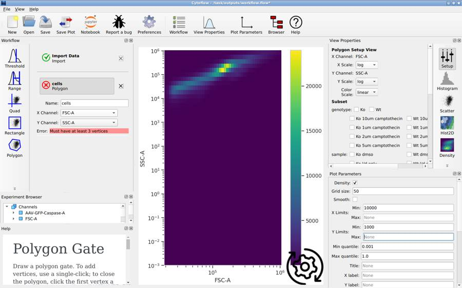
{
"duration_ms": 7000
}Wall time: 7.0026 seconds Sleep completed.
text(await tools.exec_command({cmd:"cu screenshot /tmp/cells_view.png","max_output_tokens":1000}));
image((await tools.view_image({path:"/tmp/cells_view.png"})).image_url);
Script completed Wall time 0.1 seconds Output:
{"chunk_id":"3f35e0","wall_time_seconds":0.0000037,"exit_code":0,"original_token_count":5,"output":"/tmp/cells_view.png\n"}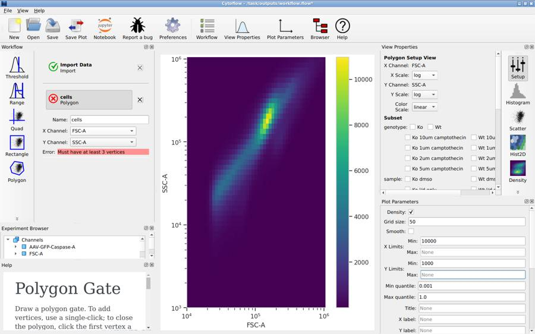
text(await tools.exec_command({cmd:"cu click 648 458\ncu click 718 458\ncu click 872 275\ncu click 872 160\ncu click 730 160\ncu click 648 337\ncu click 648 458\ncu key ctrl+s\ncu screenshot /tmp/cells_gate.png","max_output_tokens":1000}));
image((await tools.view_image({path:"/tmp/cells_gate.png"})).image_url);
Script completed Wall time 0.8 seconds Output:
{"chunk_id":"343b53","wall_time_seconds":0.66354153,"exit_code":0,"original_token_count":5,"output":"/tmp/cells_gate.png\n"}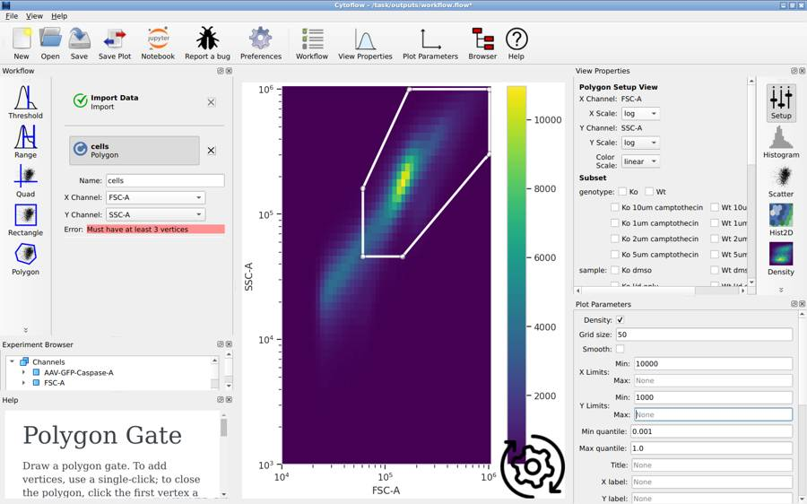
text(await tools.exec_command({cmd:"cu click 47 524\ncu screenshot /tmp/hierarchy.png","max_output_tokens":1000}));
image((await tools.view_image({path:"/tmp/hierarchy.png"})).image_url);
Script completed Wall time 0.2 seconds Output:
{"chunk_id":"21b078","wall_time_seconds":0.00185703,"exit_code":0,"original_token_count":5,"output":"/tmp/hierarchy.png\n"}text(await tools.exec_command({cmd:"cu scroll 48 485 down 3\ncu screenshot /tmp/toolbar_down.png","max_output_tokens":1000}));
image((await tools.view_image({path:"/tmp/toolbar_down.png"})).image_url);
Script completed Wall time 0.4 seconds Output:
{"chunk_id":"4dc5eb","wall_time_seconds":0.20210129,"exit_code":0,"original_token_count":6,"output":"/tmp/toolbar_down.png\n"}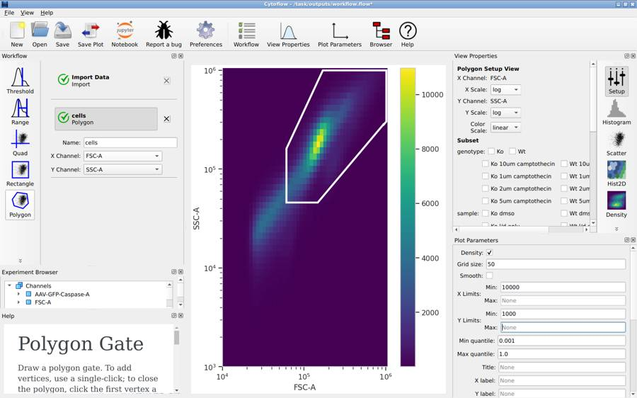
text(await tools.exec_command({cmd:"cu click 408 714\ncu click 408 616\ncu screenshot /tmp/workspace.png","max_output_tokens":1000}));
image((await tools.view_image({path:"/tmp/workspace.png"})).image_url);
Script completed Wall time 0.3 seconds Output:
{"chunk_id":"7091d6","wall_time_seconds":0.10329143,"exit_code":0,"original_token_count":5,"output":"/tmp/workspace.png\n"}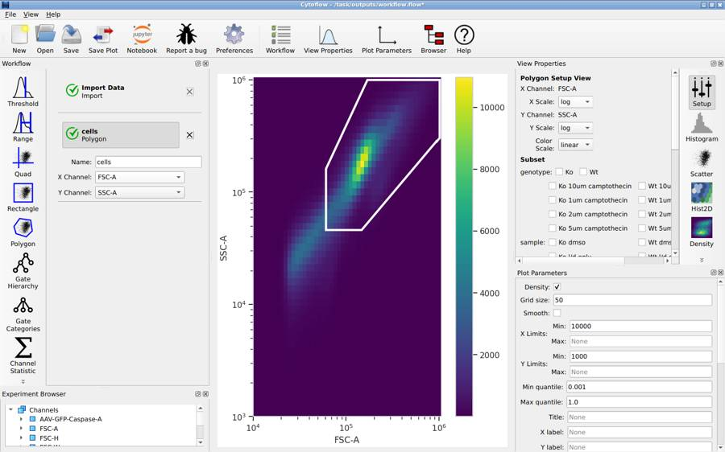
text(await tools.exec_command({cmd:"cu click 47 523\ncu screenshot /tmp/hierarchy2.png","max_output_tokens":1000}));
image((await tools.view_image({path:"/tmp/hierarchy2.png"})).image_url);
Script completed Wall time 0.2 seconds Output:
{"chunk_id":"bf0987","wall_time_seconds":0.00000422,"exit_code":0,"original_token_count":5,"output":"/tmp/hierarchy2.png\n"}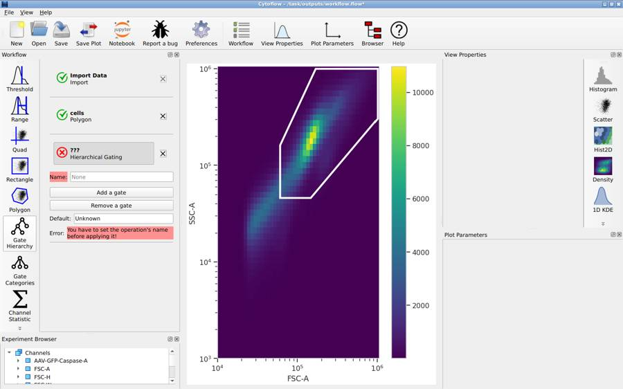
text(await tools.exec_command({cmd:"cu click 377 354\ncu screenshot /tmp/delete.png","max_output_tokens":1000}));
image((await tools.view_image({path:"/tmp/delete.png"})).image_url);
Script completed Wall time 0.2 seconds Output:
{"chunk_id":"3cb73c","wall_time_seconds":0.00000401,"exit_code":0,"original_token_count":4,"output":"/tmp/delete.png\n"}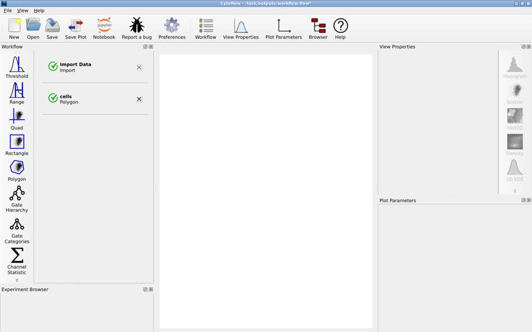
text(await tools.exec_command({cmd:"cu click 218 268\ncu click 47 454\ncu screenshot /tmp/singlet_init.png","max_output_tokens":1000}));
image((await tools.view_image({path:"/tmp/singlet_init.png"})).image_url);
Script completed Wall time 0.3 seconds Output:
{"chunk_id":"318d61","wall_time_seconds":0.10450207,"exit_code":0,"original_token_count":6,"output":"/tmp/singlet_init.png\n"}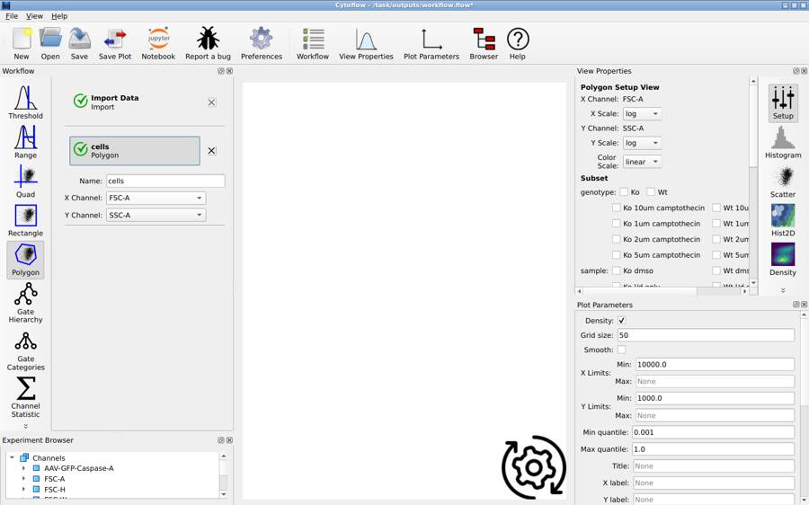
text(await tools.exec_command({cmd:"cu screenshot /tmp/singlet_init2.png","max_output_tokens":1000}));
image((await tools.view_image({path:"/tmp/singlet_init2.png"})).image_url);
Script completed Wall time 0.1 seconds Output:
{"chunk_id":"53c785","wall_time_seconds":0.00000392,"exit_code":0,"original_token_count":6,"output":"/tmp/singlet_init2.png\n"}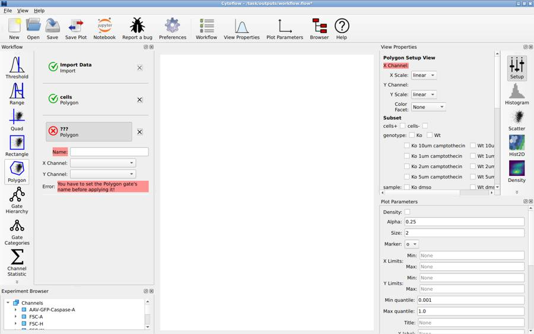
text(await tools.exec_command({cmd:"cu click 277 408\ncu type singlets\ncu click 1086 338\ncu click 1098 571\ncu click 355 438\ncu key f\ncu key Return\ncu click 355 469\ncu key f\ncu key Down\ncu key Return\ncu screenshot /tmp/singlet_set.png","max_output_tokens":1000}));
image((await tools.view_image({path:"/tmp/singlet_set.png"})).image_url);
Script completed Wall time 0.9 seconds Output:
{"chunk_id":"4bf997","wall_time_seconds":0.6962664,"exit_code":0,"original_token_count":6,"output":"/tmp/singlet_set.png\n"}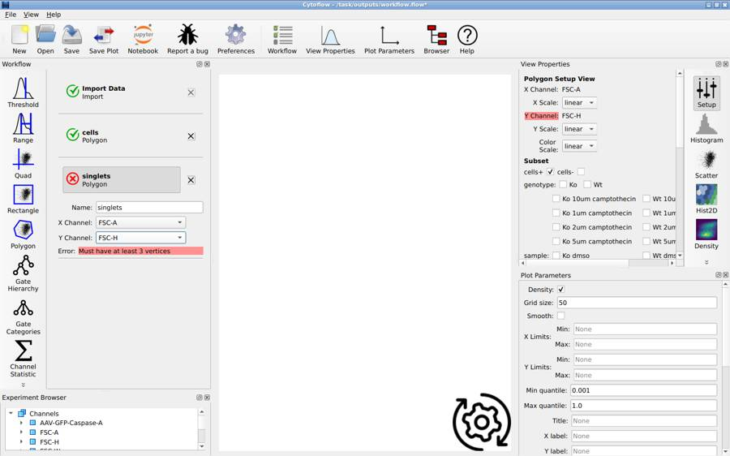
text(await tools.exec_command({cmd:"cu screenshot /tmp/singletplot.png","max_output_tokens":1000}));
image((await tools.view_image({path:"/tmp/singletplot.png"})).image_url);
Script completed Wall time 0.1 seconds Output:
{"chunk_id":"efd652","wall_time_seconds":0.00000387,"exit_code":0,"original_token_count":6,"output":"/tmp/singletplot.png\n"}{
"duration_ms": 15000
}Wall time: 15.0035 seconds Sleep completed.
text(await tools.exec_command({cmd:"cu screenshot /tmp/singletplot2.png","max_output_tokens":1000}));
image((await tools.view_image({path:"/tmp/singletplot2.png"})).image_url);
Script completed Wall time 0.1 seconds Output:
{"chunk_id":"3bc31b","wall_time_seconds":0.000004,"exit_code":0,"original_token_count":6,"output":"/tmp/singletplot2.png\n"}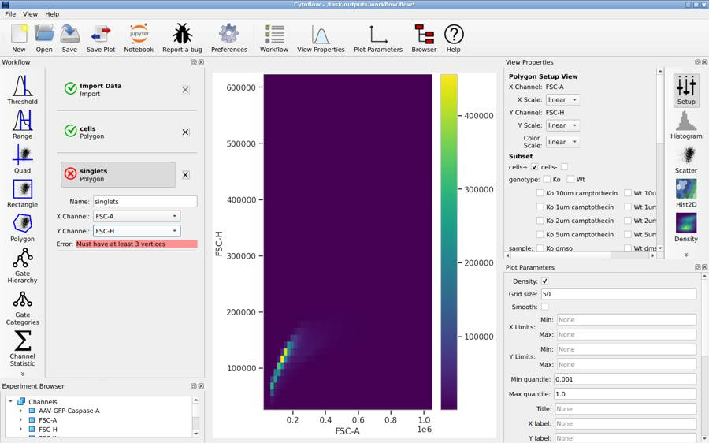
text(await tools.exec_command({cmd:"cu click 1167 202\ncu key l\ncu key o\ncu key Return\ncu click 1167 254\ncu key l\ncu key o\ncu key Return\ncu click 1167 289\ncu key l\ncu key o\ncu key Return\ncu screenshot /tmp/singletlogs.png","max_output_tokens":1000}));
image((await tools.view_image({path:"/tmp/singletlogs.png"})).image_url);
Script completed Wall time 0.5 seconds Output:
{"chunk_id":"7ab4ef","wall_time_seconds":0.34737141,"exit_code":0,"original_token_count":6,"output":"/tmp/singletlogs.png\n"}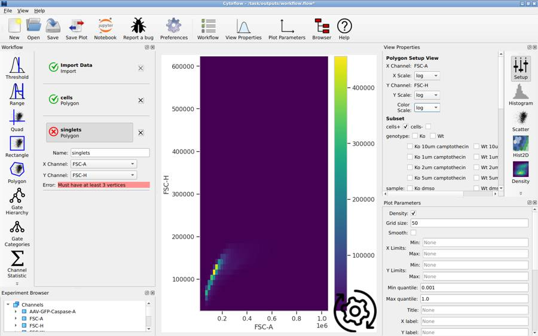
{
"duration_ms": 15000
}Wall time: 15.0035 seconds Sleep completed.
text(await tools.exec_command({cmd:"cu screenshot /tmp/singletslogdone.png","max_output_tokens":1000}));
image((await tools.view_image({path:"/tmp/singletslogdone.png"})).image_url);
Script completed Wall time 0.1 seconds Output:
{"chunk_id":"184218","wall_time_seconds":0.00000412,"exit_code":0,"original_token_count":7,"output":"/tmp/singletslogdone.png\n"}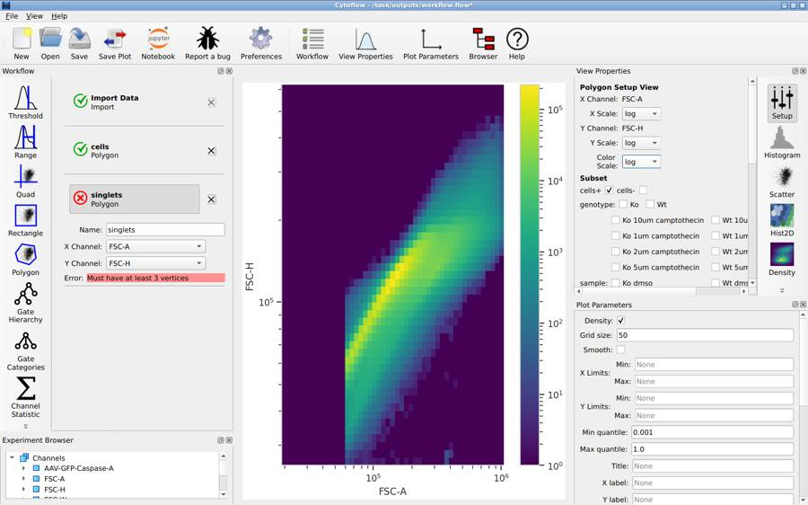
text(await tools.exec_command({cmd:"cu click 615 787\ncu click 615 583\ncu click 734 343\ncu click 852 173\ncu click 893 173\ncu click 893 233\ncu click 734 518\ncu click 665 684\ncu click 615 787\ncu key ctrl+s\ncu screenshot /tmp/singlets_gate.png","max_output_tokens":1000}));
image((await tools.view_image({path:"/tmp/singlets_gate.png"})).image_url);
Script completed Wall time 1.0 seconds Output:
{"chunk_id":"49f808","wall_time_seconds":0.87212848,"exit_code":0,"original_token_count":6,"output":"/tmp/singlets_gate.png\n"}text(await tools.exec_command({cmd:"cu click 47 244\ncu screenshot /tmp/live_init.png","max_output_tokens":1000}));
image((await tools.view_image({path:"/tmp/live_init.png"})).image_url);
Script completed Wall time 0.2 seconds Output:
{"chunk_id":"e055fb","wall_time_seconds":0.00408742,"exit_code":0,"original_token_count":5,"output":"/tmp/live_init.png\n"}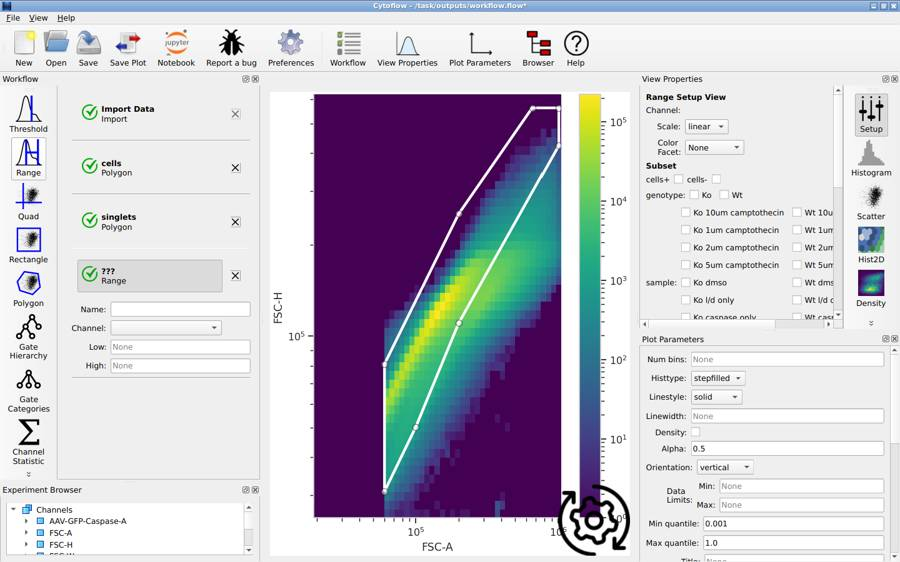
text(await tools.exec_command({cmd:"cu click 259 495\ncu type live\ncu click 1085 287\ncu click 1151 202\ncu key End\ncu key Return\ncu click 1178 235\ncu screenshot /tmp/hue.png","max_output_tokens":1000}));
image((await tools.view_image({path:"/tmp/hue.png"})).image_url);
Script completed Wall time 0.6 seconds Output:
{"chunk_id":"df5c78","wall_time_seconds":0.44773861,"exit_code":0,"original_token_count":4,"output":"/tmp/hue.png\n"}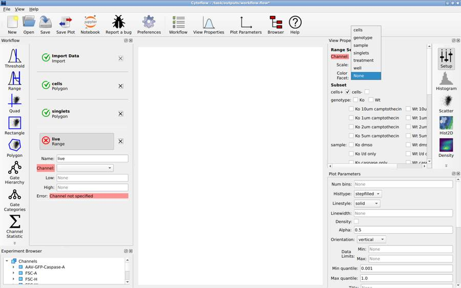
text(await tools.exec_command({cmd:"cu click 1139 188\ncu scroll 1237 463 down 4\ncu screenshot /tmp/livesubset.png","max_output_tokens":1000}));
image((await tools.view_image({path:"/tmp/livesubset.png"})).image_url);
Script completed Wall time 0.6 seconds Output:
{"chunk_id":"2bd156","wall_time_seconds":0.40340495,"exit_code":0,"original_token_count":5,"output":"/tmp/livesubset.png\n"}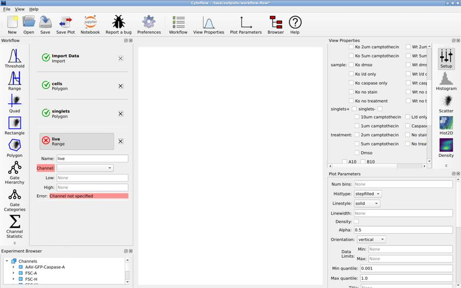
text(await tools.exec_command({cmd:"cu click 1106 339\ncu click 1273 364\ncu click 1273 392\ncu click 1273 420\ncu click 1112 691\ncu click 1182 604\ncu key s\ncu key t\ncu key Return\ncu click 342 525\ncu key l\ncu key Return\ncu screenshot /tmp/livehist_start.png","max_output_tokens":1000}));
image((await tools.view_image({path:"/tmp/livehist_start.png"})).image_url);
Script completed Wall time 0.9 seconds Output:
{"chunk_id":"f6a80a","wall_time_seconds":0.70634363,"exit_code":0,"original_token_count":6,"output":"/tmp/livehist_start.png\n"}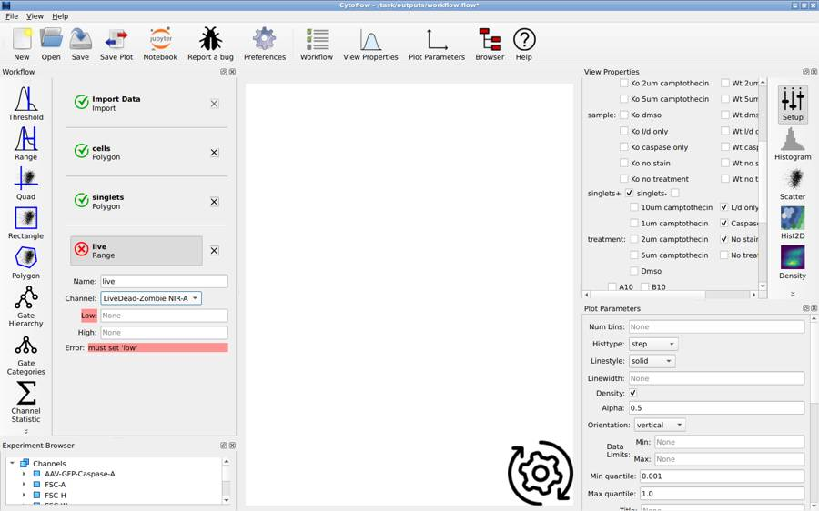
{
"duration_ms": 12000
}Wall time: 12.0042 seconds Sleep completed.
text(await tools.exec_command({cmd:"cu screenshot /tmp/livehist.png","max_output_tokens":1000}));
image((await tools.view_image({path:"/tmp/livehist.png"})).image_url);
Script completed Wall time 0.1 seconds Output:
{"chunk_id":"16d321","wall_time_seconds":0.00000429,"exit_code":0,"original_token_count":5,"output":"/tmp/livehist.png\n"}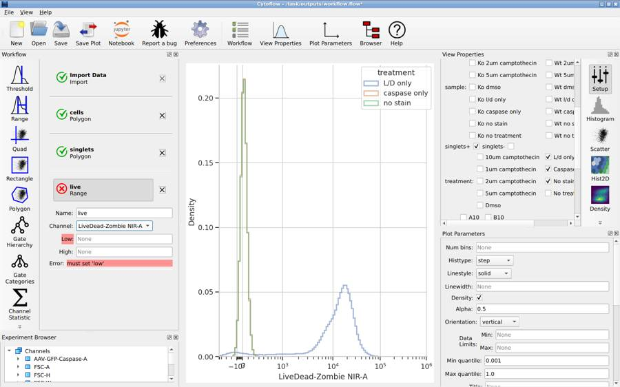
text(await tools.exec_command({cmd:"cu click 276 555\ncu key ctrl+a\ncu type -10000000\ncu click 276 585\ncu key ctrl+a\ncu type 2000\ncu key Tab\ncu key ctrl+s\ncu click 48 174\ncu screenshot /tmp/caspase_init.png","max_output_tokens":1000}));
image((await tools.view_image({path:"/tmp/caspase_init.png"})).image_url);
Script completed Wall time 0.8 seconds Output:
{"chunk_id":"4fc42e","wall_time_seconds":0.640834509,"exit_code":0,"original_token_count":6,"output":"/tmp/caspase_init.png\n"}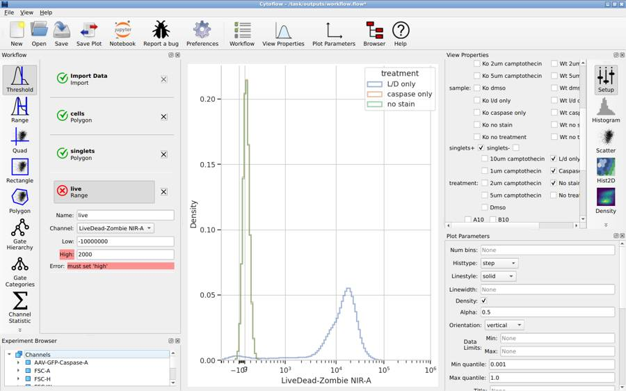
text(await tools.exec_command({cmd:"cu screenshot /tmp/caspase_init2.png","max_output_tokens":1000}));
image((await tools.view_image({path:"/tmp/caspase_init2.png"})).image_url);
Script completed Wall time 0.1 seconds Output:
{"chunk_id":"dc388f","wall_time_seconds":0.00000375,"exit_code":0,"original_token_count":6,"output":"/tmp/caspase_init2.png\n"}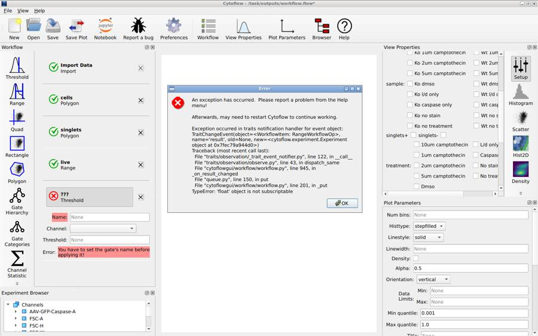
text(await tools.exec_command({cmd:"cu click 919 544\ncu click 283 582\ncu key ctrl+a\ncu type caspase_positive\ncu scroll 1227 224 up 10\ncu screenshot /tmp/caspaseprops.png","max_output_tokens":1000}));
image((await tools.view_image({path:"/tmp/caspaseprops.png"})).image_url);
Script completed Wall time 1.7 seconds Output:
{"chunk_id":"392399","wall_time_seconds":1.546617249,"exit_code":0,"original_token_count":6,"output":"/tmp/caspaseprops.png\n"}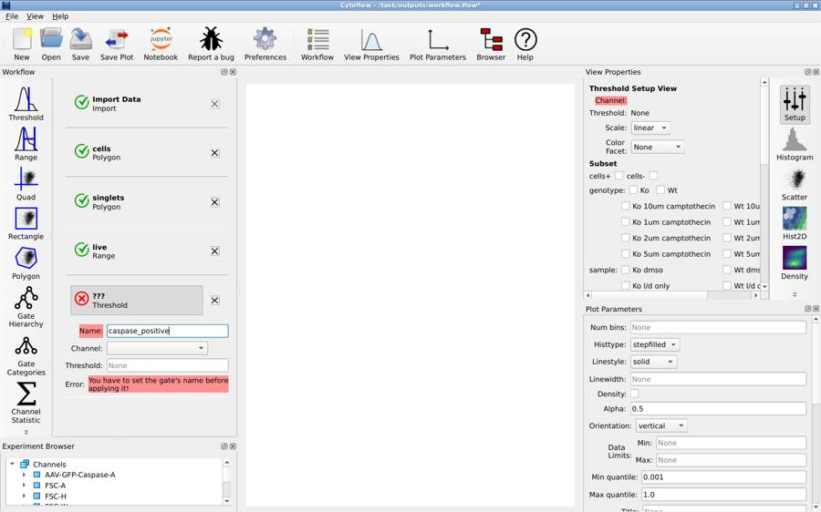
text(await tools.exec_command({cmd:"cu click 1086 308\ncu click 1163 224\ncu key End\ncu key Return\ncu click 1188 258\ncu key t\ncu key Return\ncu scroll 1236 464 down 4\ncu screenshot /tmp/caspsubset.png","max_output_tokens":1000}));
image((await tools.view_image({path:"/tmp/caspsubset.png"})).image_url);
Script completed Wall time 0.8 seconds Output:
{"chunk_id":"5a6796","wall_time_seconds":0.67654609,"exit_code":0,"original_token_count":5,"output":"/tmp/caspsubset.png\n"}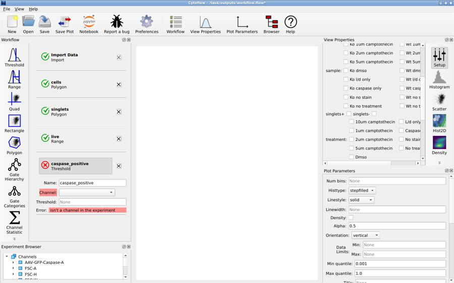
text(await tools.exec_command({cmd:"cu click 1107 361\ncu click 1273 386\ncu click 1273 414\ncu click 1273 443\ncu click 1112 691\ncu click 1182 605\ncu key Home\ncu key Down\ncu key Return\ncu click 352 613\ncu key Home\ncu key Return\ncu screenshot /tmp/casphist_init.png","max_output_tokens":1000}));
image((await tools.view_image({path:"/tmp/casphist_init.png"})).image_url);
Script completed Wall time 0.9 seconds Output:
{"chunk_id":"4ea9aa","wall_time_seconds":0.696295809,"exit_code":0,"original_token_count":6,"output":"/tmp/casphist_init.png\n"}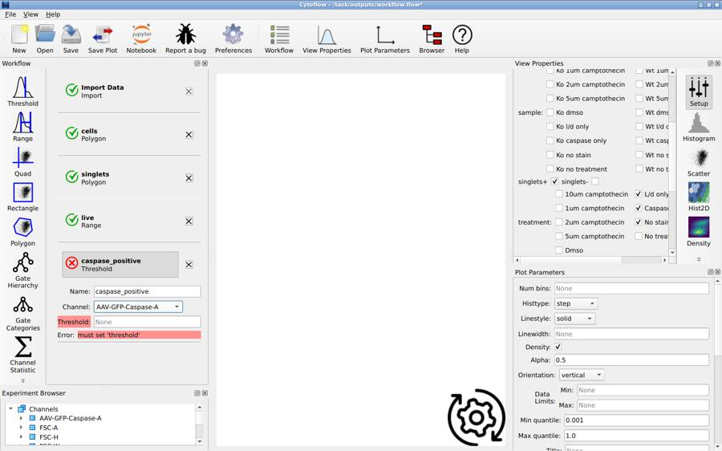
{
"duration_ms": 12000
}Wall time: 12.0031 seconds Sleep completed.
text(await tools.exec_command({cmd:"cu screenshot /tmp/casphist.png","max_output_tokens":1000}));
image((await tools.view_image({path:"/tmp/casphist.png"})).image_url);
Script completed Wall time 0.1 seconds Output:
{"chunk_id":"a25b74","wall_time_seconds":0.00000399,"exit_code":0,"original_token_count":5,"output":"/tmp/casphist.png\n"}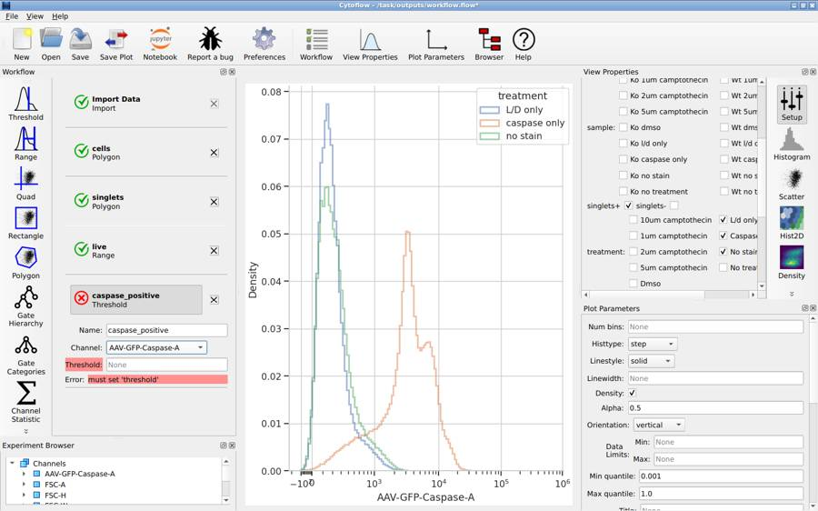
text(await tools.exec_command({cmd:"cu click 283 643\ncu key ctrl+a\ncu type 2500\ncu key Tab\ncu key ctrl+s\ncu click 46 693\ncu screenshot /tmp/statsinit.png","max_output_tokens":1000}));
image((await tools.view_image({path:"/tmp/statsinit.png"})).image_url);
Script completed Wall time 0.4 seconds Output:
{"chunk_id":"c9e251","wall_time_seconds":0.27557797,"exit_code":0,"original_token_count":5,"output":"/tmp/statsinit.png\n"}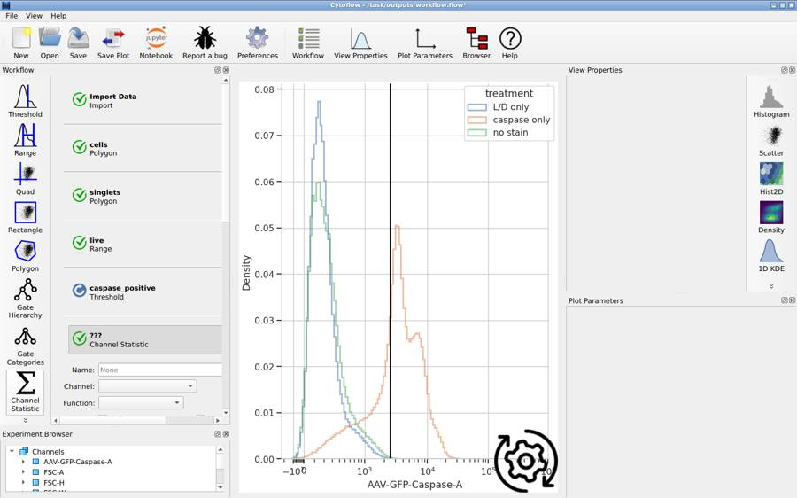
text(await tools.exec_command({cmd:"cu click 408 783\ncu scroll 292 700 down 6\ncu screenshot /tmp/statsoptions.png","max_output_tokens":1000}));
image((await tools.view_image({path:"/tmp/statsoptions.png"})).image_url);
Script completed Wall time 0.8 seconds Output:
{"chunk_id":"ac12f4","wall_time_seconds":0.603317639,"exit_code":0,"original_token_count":6,"output":"/tmp/statsoptions.png\n"}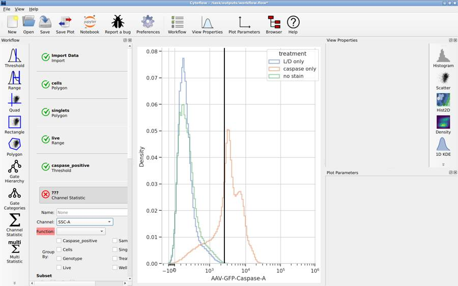
text(await tools.exec_command({cmd:"cu click 269 669\ncu key ctrl+a\ncu type event_counts\ncu click 320 727\ncu screenshot /tmp/statfunctions.png","max_output_tokens":1000}));
image((await tools.view_image({path:"/tmp/statfunctions.png"})).image_url);
Script completed Wall time 0.6 seconds Output:
{"chunk_id":"666635","wall_time_seconds":0.43570833,"exit_code":0,"original_token_count":6,"output":"/tmp/statfunctions.png\n"}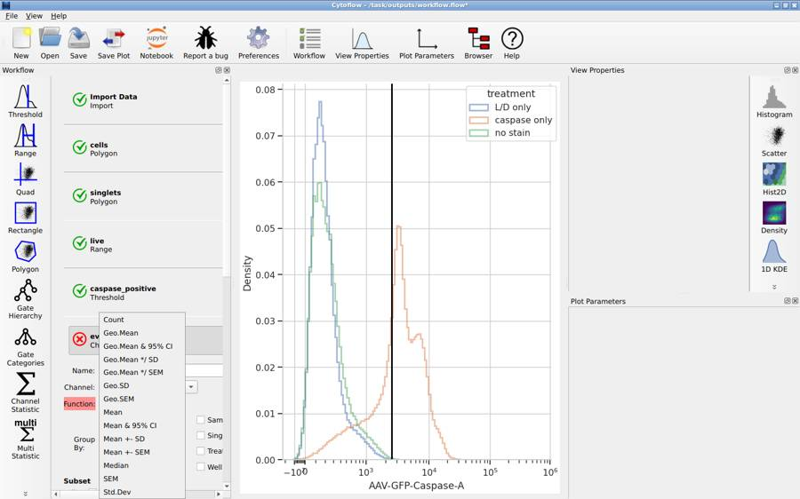
text(await tools.exec_command({cmd:"cu click 205 576\ncu click 185 757\ncu click 185 784\ncu click 185 841\ncu click 361 784\ncu click 361 841\ncu key ctrl+s\ncu move 1394 517\ncu screenshot /tmp/groupstats.png","max_output_tokens":1000}));
image((await tools.view_image({path:"/tmp/groupstats.png"})).image_url);
Script completed Wall time 0.7 seconds Output:
{"chunk_id":"df2ba4","wall_time_seconds":0.5506736,"exit_code":0,"original_token_count":5,"output":"/tmp/groupstats.png\n"}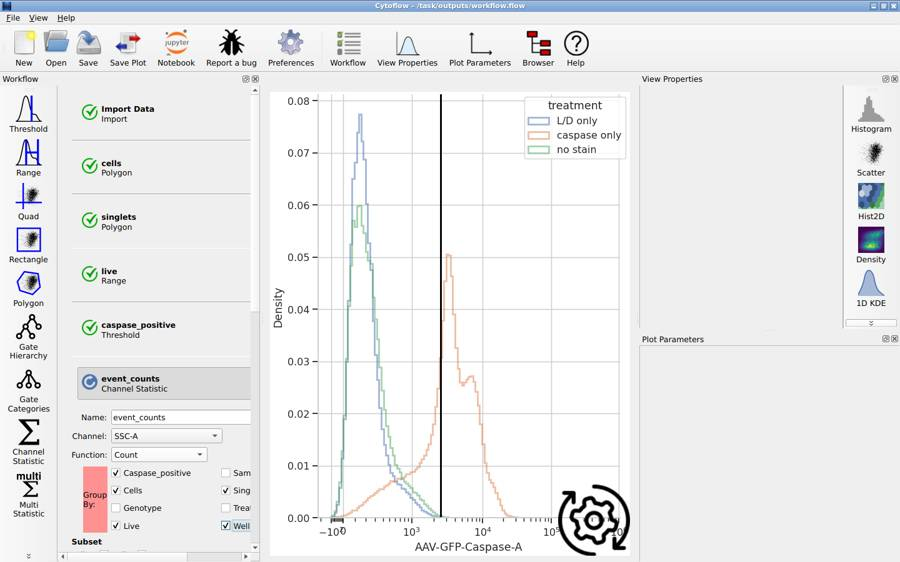
text(await tools.exec_command({cmd:"cu click 1393 518\ncu click 1393 518\ncu click 1393 518\ncu click 1393 518\ncu screenshot /tmp/views_more.png","max_output_tokens":1000}));
image((await tools.view_image({path:"/tmp/views_more.png"})).image_url);
Script completed Wall time 0.5 seconds Output:
{"chunk_id":"b3687d","wall_time_seconds":0.31338126,"exit_code":0,"original_token_count":5,"output":"/tmp/views_more.png\n"}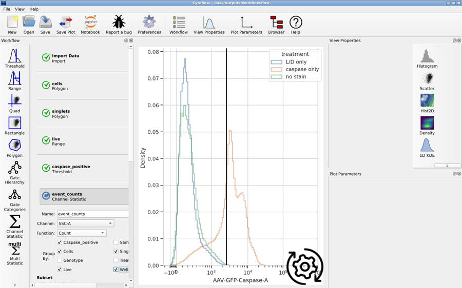
text(await tools.exec_command({cmd:"cu move 1360 518","max_output_tokens":1000}));
Script completed
Wall time 0.0 seconds
Output:
{"chunk_id":"5e9fcd","wall_time_seconds":0.00000353,"exit_code":0,"original_token_count":0,"output":""}{
"duration_ms": 3000
}Wall time: 3.0028 seconds Sleep completed.
text(await tools.exec_command({cmd:"cu screenshot /tmp/viewsmore2.png","max_output_tokens":1000}));
image((await tools.view_image({path:"/tmp/viewsmore2.png"})).image_url);
Script completed Wall time 0.1 seconds Output:
{"chunk_id":"2b4128","wall_time_seconds":0.00000416,"exit_code":0,"original_token_count":5,"output":"/tmp/viewsmore2.png\n"}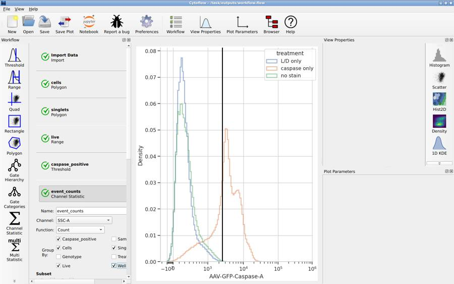
text(await tools.exec_command({cmd:"cu click 1430 542\ncu screenshot /tmp/allviews.png","max_output_tokens":1000}));
image((await tools.view_image({path:"/tmp/allviews.png"})).image_url);
Script completed Wall time 0.2 seconds Output:
{"chunk_id":"a5220c","wall_time_seconds":0.00094197,"exit_code":0,"original_token_count":5,"output":"/tmp/allviews.png\n"}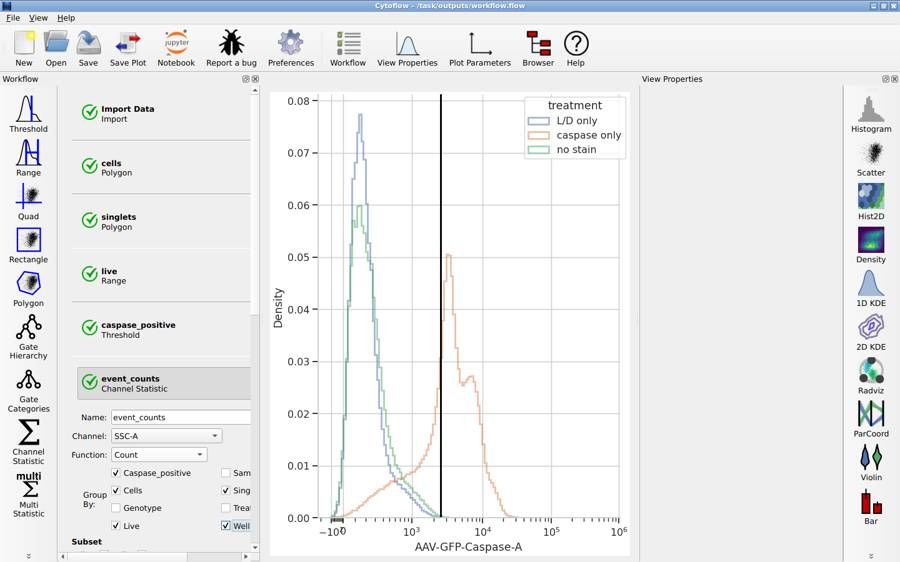
text(await tools.exec_command({cmd:"cu click 1394 890\ncu screenshot /tmp/overflow.png","max_output_tokens":1000}));
image((await tools.view_image({path:"/tmp/overflow.png"})).image_url);
Script completed Wall time 0.2 seconds Output:
{"chunk_id":"e0b309","wall_time_seconds":0.00000436,"exit_code":0,"original_token_count":5,"output":"/tmp/overflow.png\n"}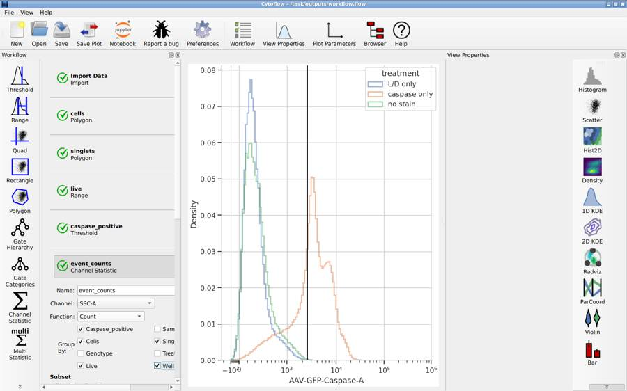
text(await tools.exec_command({cmd:"cu scroll 1340 797 down 7\ncu screenshot /tmp/overflow2.png","max_output_tokens":1000}));
image((await tools.view_image({path:"/tmp/overflow2.png"})).image_url);
Script completed Wall time 0.8 seconds Output:
{"chunk_id":"33b91d","wall_time_seconds":0.6025995,"exit_code":0,"original_token_count":5,"output":"/tmp/overflow2.png\n"}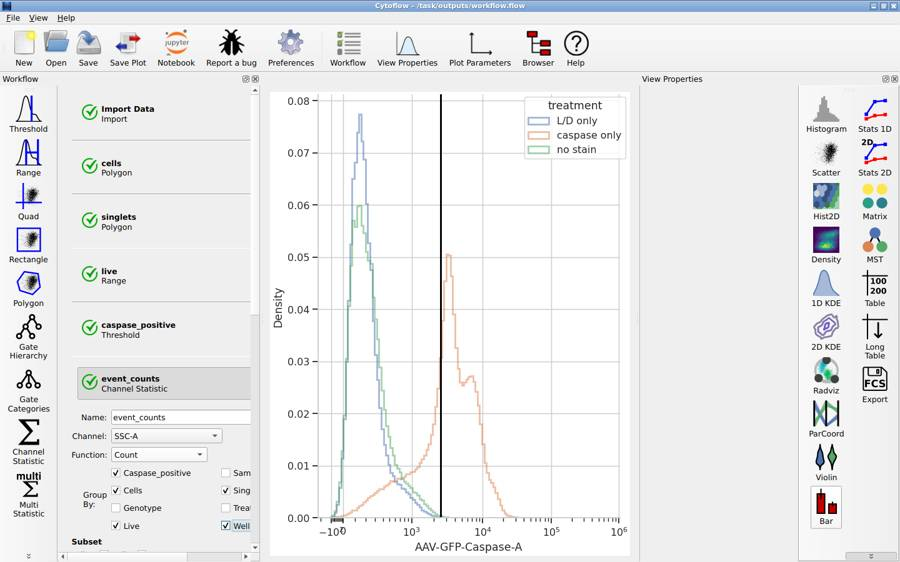
text(await tools.exec_command({cmd:"cu click 1400 526\ncu screenshot /tmp/longtable.png","max_output_tokens":1000}));
image((await tools.view_image({path:"/tmp/longtable.png"})).image_url);
Script completed Wall time 0.2 seconds Output:
{"chunk_id":"349a96","wall_time_seconds":0.00000437,"exit_code":0,"original_token_count":5,"output":"/tmp/longtable.png\n"}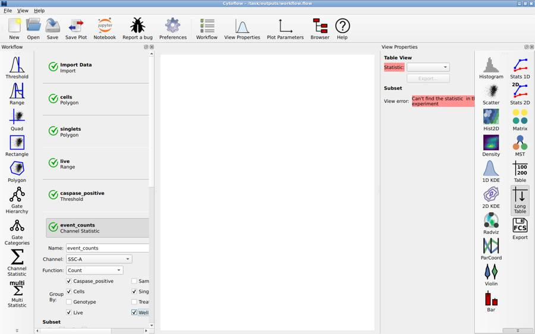
text(await tools.exec_command({cmd:"cu click 1198 180\ncu key Home\ncu key Return\ncu screenshot /tmp/countlong.png","max_output_tokens":1000}));
image((await tools.view_image({path:"/tmp/countlong.png"})).image_url);
Script completed Wall time 0.2 seconds Output:
{"chunk_id":"177466","wall_time_seconds":0.02856638,"exit_code":0,"original_token_count":5,"output":"/tmp/countlong.png\n"}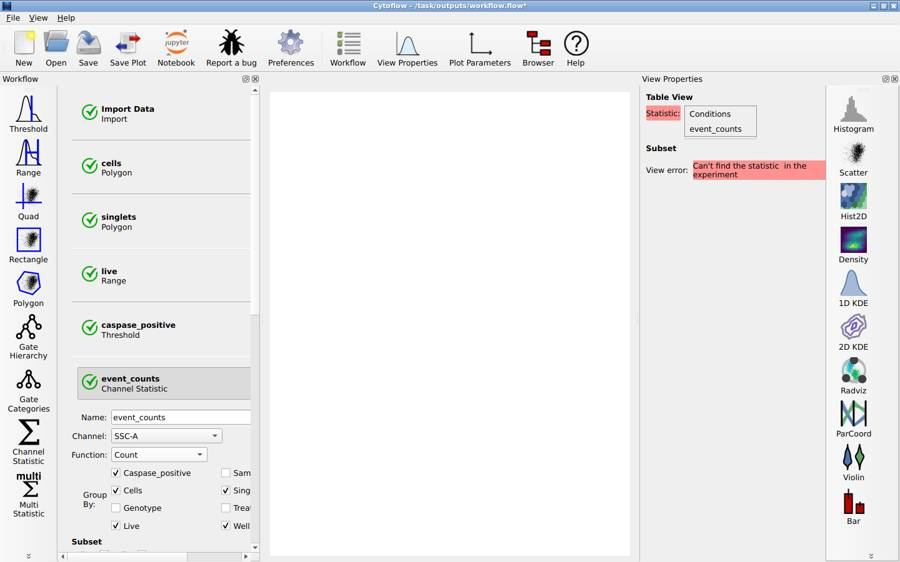
text(await tools.exec_command({cmd:"cu click 1154 203\ncu screenshot /tmp/counttable_done.png","max_output_tokens":1000}));
image((await tools.view_image({path:"/tmp/counttable_done.png"})).image_url);
Script completed Wall time 0.2 seconds Output:
{"chunk_id":"cd5a67","wall_time_seconds":0.00650079,"exit_code":0,"original_token_count":7,"output":"/tmp/counttable_done.png\n"}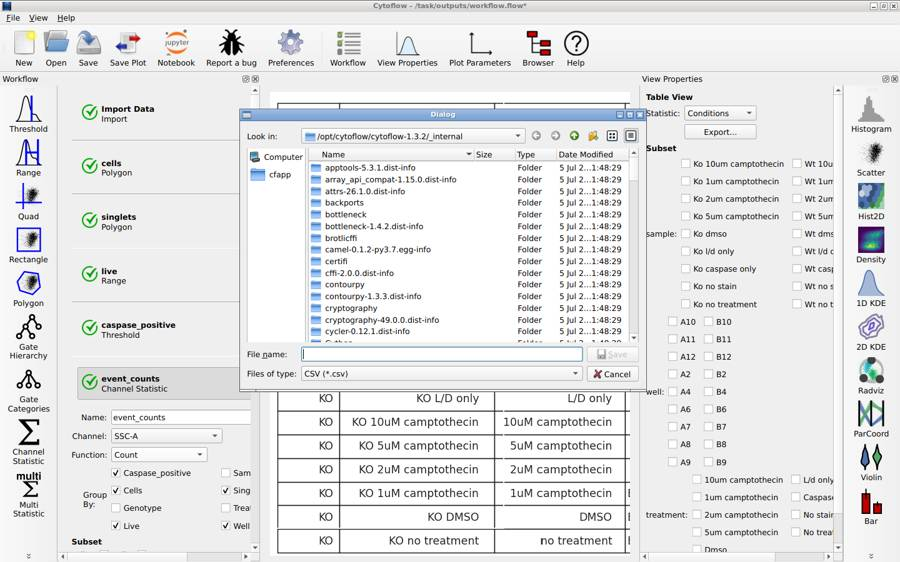
text(await tools.exec_command({cmd:"cu click 978 599\ncu click 1198 181\ncu key End\ncu key Return\ncu screenshot /tmp/event_table.png","max_output_tokens":1000}));
image((await tools.view_image({path:"/tmp/event_table.png"})).image_url);
Script completed Wall time 0.3 seconds Output:
{"chunk_id":"2f2991","wall_time_seconds":0.1391165,"exit_code":0,"original_token_count":6,"output":"/tmp/event_table.png\n"}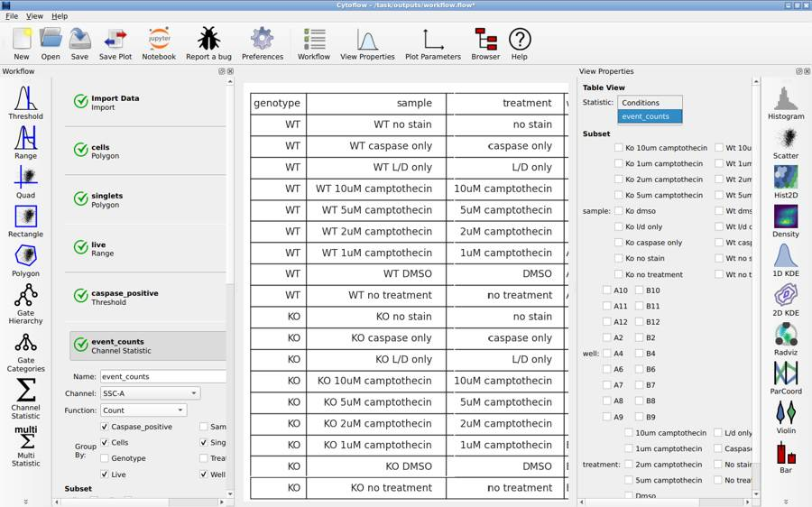
text(await tools.exec_command({cmd:"cu key Return\ncu screenshot /tmp/event_table2.png","max_output_tokens":1000}));
image((await tools.view_image({path:"/tmp/event_table2.png"})).image_url);
Script completed Wall time 0.1 seconds Output:
{"chunk_id":"67a460","wall_time_seconds":0.00000471,"exit_code":0,"original_token_count":6,"output":"/tmp/event_table2.png\n"}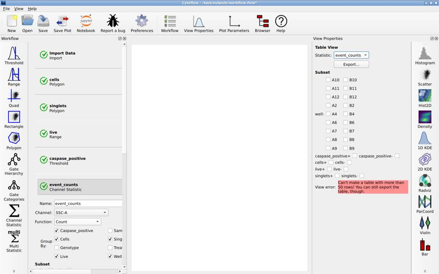
text(await tools.exec_command({cmd:"cu click 1158 210\ncu screenshot /tmp/exportdialog.png","max_output_tokens":1000}));
image((await tools.view_image({path:"/tmp/exportdialog.png"})).image_url);
Script completed Wall time 0.2 seconds Output:
{"chunk_id":"796892","wall_time_seconds":0.00312408,"exit_code":0,"original_token_count":6,"output":"/tmp/exportdialog.png\n"}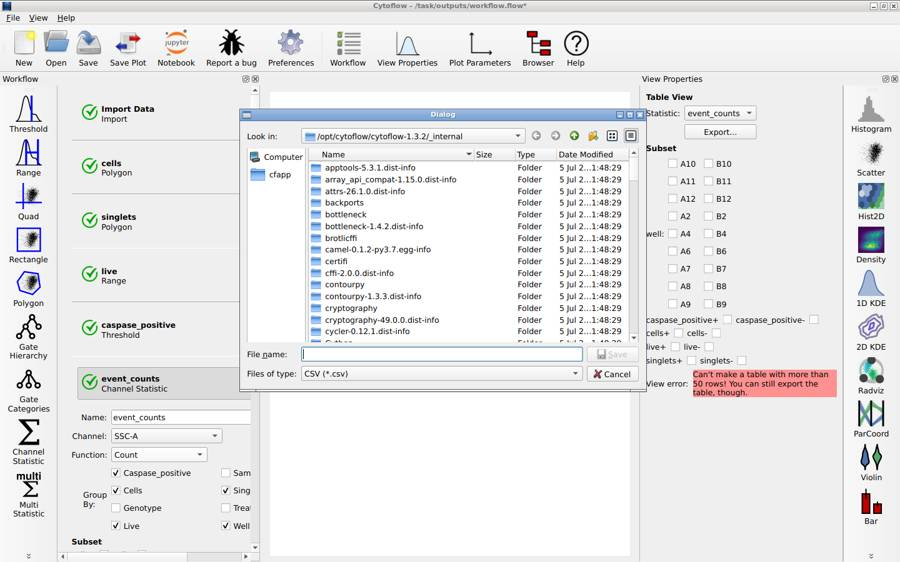
text(await tools.exec_command({cmd:"cu paste /task/outputs/cytoflow_event_counts.csv\ncu click 980 568\ncu key ctrl+s\ncu screenshot /tmp/exportdone.png","max_output_tokens":1000}));
image((await tools.view_image({path:"/tmp/exportdone.png"})).image_url);
text(await tools.exec_command({cmd:"head -8 /task/outputs/cytoflow_event_counts.csv","max_output_tokens":2000}));
Script completed Wall time 1.6 seconds Output:
{"chunk_id":"30808d","wall_time_seconds":1.355681609,"exit_code":0,"original_token_count":5,"output":"/tmp/exportdone.png\n"}{"chunk_id":"89f2bd","wall_time_seconds":0.00000351,"exit_code":0,"original_token_count":44,"output":"caspase_positive,cells,live,singlets,well,SSC-A\n0,0,0,0,A10,44933.0\n0,0,0,0,A11,48984.0\n0,0,0,0,A12,35633.0\n0,0,0,0,A2,1.0\n0,0,0,0,A4,1.0\n0,0,0,0,A6,58440.0\n0,0,0,0,A7,55461.0\n"}text(await tools.exec_command({cmd:"python - <<'PY'\nimport pandas as pd\nx=pd.read_csv('/task/outputs/cytoflow_event_counts.csv');out=[]\nfor w,d in x.groupby('well',sort=False):\n n=lambda m:int(d.loc[m,'SSC-A'].sum())\n a=int(d['SSC-A'].sum()); c=n(d.cells==1);s=n((d.cells==1)&(d.singlets==1));l=n((d.cells==1)&(d.singlets==1)&(d.live==1));p=n((d.cells==1)&(d.singlets==1)&(d.live==1)&(d.caspase_positive==1));pa=n((d.cells==1)&(d.singlets==1)&(d.caspase_positive==1));out.append([w,a,c,s,l,p,round(100*l/s,3),round(100*p/l,3),round(100*pa/s,3)])\nprint(pd.DataFrame(out,columns=['well','all','cells','singlets','live','positive','live_pct','positive_live_pct','positive_singlet_pct']).to_string(index=False))\nprint(x.shape, x['SSC-A'].min(), x['SSC-A'].sum())\nPY","max_output_tokens":3000}));
text(await tools.exec_command({cmd:"rg -n 'statistic|fill|subset|low:|high:|vertices|threshold|xscale|yscale|by:' /task/outputs/workflow.flow","max_output_tokens":3000}));
Script completed
Wall time 0.1 seconds
Output:
{"chunk_id":"e7436b","wall_time_seconds":0.00000397,"exit_code":127,"original_token_count":12,"output":"/bin/bash: line 1: python: command not found\n"}
{"chunk_id":"c79a2d","wall_time_seconds":0.00000391,"exit_code":0,"original_token_count":403,"output":"392: statistics:\n690: vertices:\n710: xscale: log\n712: yscale: log\n740: subset_list:\n741: - !category-subset;1\n747: - !category-subset;1\n769: - !category-subset;1\n783: - !category-subset;1\n932: statistics:\n1241: vertices:\n1267: xscale: log\n1269: yscale: log\n1297: subset_list:\n1298: - !bool-subset;1\n1303: - !category-subset;1\n1309: - !category-subset;1\n1331: - !category-subset;1\n1344: - !category-subset;1\n1500: statistics:\n1819: high: 2000.0\n1820: low: -10000000.0\n1850: subset_list:\n1851: - !bool-subset;1\n1856: - !category-subset;1\n1862: - !category-subset;1\n1884: - !bool-subset;1\n1889: - !category-subset;1\n1905: - !category-subset;1\n2068: statistics:\n2392: current_view: &id009 !threshold-view;2\n2395: op: &id008 !threshold;1\n2398: threshold: 2500.0\n2425: subset_list:\n2426: - !bool-subset;1\n2433: - !category-subset;1\n2439: - !bool-subset;1\n2444: - !category-subset;1\n2466: - !bool-subset;1\n2473: - !category-subset;1\n2489: - !category-subset;1\n2659: statistics:\n2985: statistic: event_counts\n2986: subset_list:\n2987: - !bool-subset;1\n2992: - !bool-subset;1\n2997: - !bool-subset;1\n3002: - !bool-subset;1\n3007: - !category-subset;1\n3176: operation: !channel-statistic;2\n3177: by:\n3186: subset_list:\n3187: - !bool-subset;1\n3192: - !bool-subset;1\n3199: - !category-subset;1\n3205: - !bool-subset;1\n3210: - !category-subset;1\n3232: - !bool-subset;1\n3239: - !category-subset;1\n3252: - !category-subset;1\n3274: statistics:\n"}text(await tools.exec_command({cmd:"python3 - <<'PY'\nimport pandas as pd\nx=pd.read_csv('/task/outputs/cytoflow_event_counts.csv');out=[]\nfor w,d in x.groupby('well',sort=False):\n n=lambda m:int(d.loc[m,'SSC-A'].sum())\n a=int(d['SSC-A'].sum()); c=n(d.cells==1);s=n((d.cells==1)&(d.singlets==1));l=n((d.cells==1)&(d.singlets==1)&(d.live==1));p=n((d.cells==1)&(d.singlets==1)&(d.live==1)&(d.caspase_positive==1));pa=n((d.cells==1)&(d.singlets==1)&(d.caspase_positive==1));out.append([w,a,c,s,l,p,round(100*l/s,3),round(100*p/l,3),round(100*pa/s,3)])\nprint(pd.DataFrame(out,columns=['well','all','cells','singlets','live','positive','live_pct','positive_live_pct','positive_singlet_pct']).to_string(index=False))\nprint(x.shape, x['SSC-A'].min(), x['SSC-A'].sum())\nPY\nsed -n '3170,3285p' /task/outputs/workflow.flow","max_output_tokens":5000}));
Script completed
Wall time 0.4 seconds
Output:
{"chunk_id":"985101","wall_time_seconds":0.21701058,"exit_code":0,"original_token_count":1002,"output":"well all cells singlets live positive live_pct positive_live_pct positive_singlet_pct\n A10 552590 352597 284363 40476 19410 14.234 47.954 83.432\n A11 377220 255499 218310 31474 7243 14.417 23.013 75.703\n A12 409074 291855 233384 31540 12110 13.514 38.396 79.596\n A2 365736 237526 196152 196151 36 99.999 0.018 0.018\n A4 440820 287552 240117 240116 179272 100.000 74.661 74.661\n A6 412724 268787 226629 30472 22 13.446 0.072 0.021\n A7 395514 271118 231770 22123 8774 9.545 39.660 84.884\n A8 384992 260640 225309 28521 13598 12.659 47.677 85.906\n A9 428254 281197 237894 35577 16506 14.955 46.395 83.064\n B10 539106 339547 295647 17149 5620 5.800 32.772 76.784\n B11 561171 348478 298603 23063 3004 7.724 13.025 55.076\n B12 538223 340915 290699 34578 4565 11.895 13.202 59.643\n B2 392795 266781 240032 239965 333 99.972 0.139 0.144\n B6 457465 278998 245125 18003 2 7.344 0.011 0.047\n B7 612174 391125 331689 15585 5954 4.699 38.203 75.422\n B8 493435 322608 281958 9354 3366 3.318 35.985 75.170\n B9 425772 257294 230836 14662 4898 6.352 33.406 72.534\n B4 605670 411530 352127 352117 212844 99.997 60.447 60.447\n(275, 6) 1.0 8392735.0\n - B8\n - B9\n - B10\n - B11\n - B12\n values_type: categorical\n operation: !channel-statistic;2\n by:\n - caspase_positive\n - cells\n - live\n - singlets\n - well\n channel: SSC-A\n function_name: Count\n name: event_counts\n subset_list:\n - !bool-subset;1\n name: caspase_positive\n selected_f: false\n selected_t: false\n values: []\n - !bool-subset;1\n name: cells\n selected_f: false\n selected_t: false\n values:\n - false\n - true\n - !category-subset;1\n name: genotype\n selected: []\n values:\n - KO\n - WT\n - !bool-subset;1\n name: live\n selected_f: false\n selected_t: false\n values: []\n - !category-subset;1\n name: sample\n selected: []\n values:\n - KO 10uM camptothecin\n - KO 1uM camptothecin\n - KO 2uM camptothecin\n - KO 5uM camptothecin\n - KO DMSO\n - KO L/D only\n - KO caspase only\n - KO no stain\n - KO no treatment\n - WT 10uM camptothecin\n - WT 1uM camptothecin\n - WT 2uM camptothecin\n - WT 5uM camptothecin\n - WT DMSO\n - WT L/D only\n - WT caspase only\n - WT no stain\n - WT no treatment\n - !bool-subset;1\n name: singlets\n selected_f: false\n selected_t: false\n values:\n - false\n - true\n - !category-subset;1\n name: treatment\n selected: []\n values:\n - 10uM camptothecin\n - 1uM camptothecin\n - 2uM camptothecin\n - 5uM camptothecin\n - DMSO\n - L/D only\n - caspase only\n - no stain\n - no treatment\n - !category-subset;1\n name: well\n selected: []\n values:\n - A10\n - A11\n - A12\n - A2\n - A4\n - A6\n - A7\n - A8\n - A9\n - B10\n - B11\n - B12\n - B2\n - B4\n - B6\n - B7\n - B8\n - B9\n statistics:\n Conditions: !pandas-dataframe;1\n columns: []\n data: {}\n index: !pandas-multiindex;2\n codes:\n - - 1\n - 1\n - 1\n - 1\n - 1\n - 1\n"}text(await tools.exec_command({cmd:"cu click 1394 246\ncu screenshot /tmp/qcscatter_init.png","max_output_tokens":1000}));
image((await tools.view_image({path:"/tmp/qcscatter_init.png"})).image_url);
Script completed Wall time 0.2 seconds Output:
{"chunk_id":"74799e","wall_time_seconds":0.00201853,"exit_code":0,"original_token_count":6,"output":"/tmp/qcscatter_init.png\n"}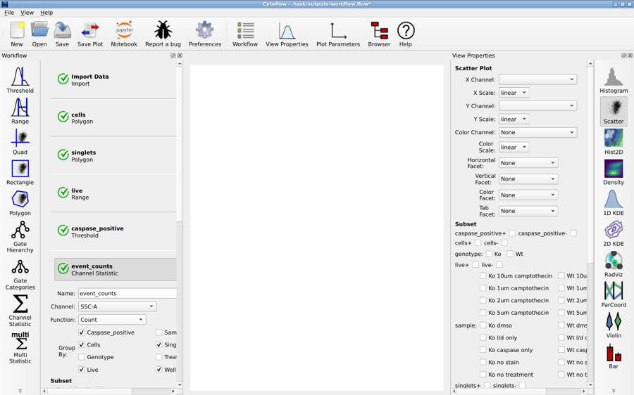
text(await tools.exec_command({cmd:"cu click 1393 176\ncu screenshot /tmp/timehistsetup.png","max_output_tokens":1000}));
image((await tools.view_image({path:"/tmp/timehistsetup.png"})).image_url);
Script completed Wall time 0.2 seconds Output:
{"chunk_id":"dcf1e4","wall_time_seconds":0.00165356,"exit_code":0,"original_token_count":6,"output":"/tmp/timehistsetup.png\n"}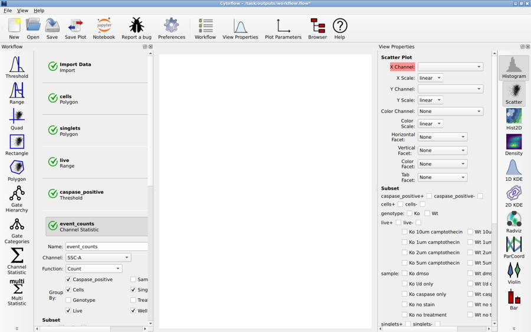
text(await tools.exec_command({cmd:"cu screenshot /tmp/timehistsetup2.png","max_output_tokens":1000}));
image((await tools.view_image({path:"/tmp/timehistsetup2.png"})).image_url);
Script completed Wall time 0.1 seconds Output:
{"chunk_id":"3ba226","wall_time_seconds":0.00000363,"exit_code":0,"original_token_count":6,"output":"/tmp/timehistsetup2.png\n"}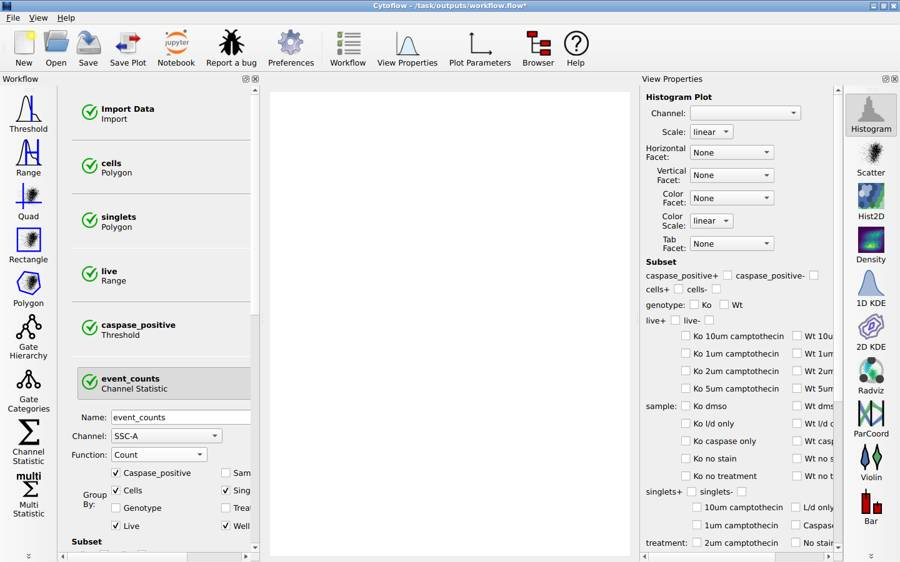
text(await tools.exec_command({cmd:"cu click 1227 244\ncu key w\ncu key Return\ncu click 1270 181\ncu key t\ncu key Return\ncu click 765 75\ncu screenshot /tmp/time_params.png","max_output_tokens":1000}));
image((await tools.view_image({path:"/tmp/time_params.png"})).image_url);
Script completed Wall time 0.4 seconds Output:
{"chunk_id":"07d803","wall_time_seconds":0.26855972,"exit_code":0,"original_token_count":6,"output":"/tmp/time_params.png\n"}text(await tools.exec_command({cmd:"cu click 1231 575\ncu key ctrl+a\ncu type 60\ncu key Tab\ncu scroll 1272 827 down 4\ncu screenshot /tmp/time_params2.png","max_output_tokens":1000}));
image((await tools.view_image({path:"/tmp/time_params2.png"})).image_url);
Script completed Wall time 0.7 seconds Output:
{"chunk_id":"bcd506","wall_time_seconds":0.505451739,"exit_code":0,"original_token_count":6,"output":"/tmp/time_params2.png\n"}text(await tools.exec_command({cmd:"cu click 1242 771\ncu key ctrl+a\ncu type 3\ncu key Tab\ncu key ctrl+s\ncu screenshot /tmp/timeplot_pending.png","max_output_tokens":1000}));
image((await tools.view_image({path:"/tmp/timeplot_pending.png"})).image_url);
Script completed Wall time 0.3 seconds Output:
{"chunk_id":"f41c3e","wall_time_seconds":0.10072799,"exit_code":0,"original_token_count":7,"output":"/tmp/timeplot_pending.png\n"}{
"duration_ms": 15000
}Wall time: 15.0039 seconds Sleep completed.
text(await tools.exec_command({cmd:"cu screenshot /tmp/timepanels.png","max_output_tokens":1000}));
image((await tools.view_image({path:"/tmp/timepanels.png"})).image_url);
Script completed Wall time 0.1 seconds Output:
{"chunk_id":"77ebd0","wall_time_seconds":0.00000405,"exit_code":0,"original_token_count":5,"output":"/tmp/timepanels.png\n"}text(await tools.exec_command({cmd:"cu screenshot /task/outputs/qc_acquisition.png\ncu click 1393 246\ncu screenshot /tmp/time_scatter_set.png","max_output_tokens":1000}));
image((await tools.view_image({path:"/tmp/time_scatter_set.png"})).image_url);
Script completed Wall time 0.2 seconds Output:
{"chunk_id":"d25e07","wall_time_seconds":0.04720779,"exit_code":0,"original_token_count":15,"output":"/task/outputs/qc_acquisition.png\n/tmp/time_scatter_set.png\n"}text(await tools.exec_command({cmd:"cu click 1257 481\ncu key w\ncu key Return\ncu click 1297 181\ncu key t\ncu key Return\ncu click 1190 270\ncu key l\ncu key o\ncu key Return\ncu click 1298 241\ncu key f\ncu key Return\ncu scroll 1245 609 up 12\ncu screenshot /tmp/time_scatter_loading.png","max_output_tokens":1000}));
image((await tools.view_image({path:"/tmp/time_scatter_loading.png"})).image_url);
Script completed Wall time 1.8 seconds Output:
{"chunk_id":"363f87","wall_time_seconds":1.658282209,"exit_code":0,"original_token_count":8,"output":"/tmp/time_scatter_loading.png\n"}text(await tools.exec_command({cmd:"cu click 837 139\ncu screenshot /tmp/a12_loading.png","max_output_tokens":1000}));
image((await tools.view_image({path:"/tmp/a12_loading.png"})).image_url);
Script completed Wall time 0.2 seconds Output:
{"chunk_id":"fedd15","wall_time_seconds":0.01973402,"exit_code":0,"original_token_count":6,"output":"/tmp/a12_loading.png\n"}{
"duration_ms": 12000
}Wall time: 12.0022 seconds Sleep completed.
text(await tools.exec_command({cmd:"cu screenshot /tmp/a12_time_fsc.png","max_output_tokens":1000}));
image((await tools.view_image({path:"/tmp/a12_time_fsc.png"})).image_url);
Script completed Wall time 0.1 seconds Output:
{"chunk_id":"691b74","wall_time_seconds":0.0000037,"exit_code":0,"original_token_count":6,"output":"/tmp/a12_time_fsc.png\n"}text(await tools.exec_command({cmd:"cu screenshot /task/outputs/qc_A12_time_FSC.png\ncu click 46 889\ncu scroll 51 803 down 6\ncu screenshot /tmp/operationmenu.png","max_output_tokens":1000}));
image((await tools.view_image({path:"/tmp/operationmenu.png"})).image_url);
Script completed Wall time 0.8 seconds Output:
{"chunk_id":"70bf85","wall_time_seconds":0.67020853,"exit_code":0,"original_token_count":15,"output":"/task/outputs/qc_A12_time_FSC.png\n/tmp/operationmenu.png\n"}text(await tools.exec_command({cmd:"cu click 129 485\ncu screenshot /tmp/binning.png","max_output_tokens":1000}));
image((await tools.view_image({path:"/tmp/binning.png"})).image_url);
text(await tools.exec_command({cmd:"rg -n -i 'timestep|time_step|range:|fcs_name|AAV|zombie' /task/outputs/workflow.flow | head -35","max_output_tokens":2000}));
Script completed Wall time 0.2 seconds Output:
{"chunk_id":"f6af16","wall_time_seconds":0.01139002,"exit_code":0,"original_token_count":5,"output":"/tmp/binning.png\n"}{"chunk_id":"1d51b4","wall_time_seconds":0.00000414,"exit_code":0,"original_token_count":247,"output":"3: - AAV-GFP-Caspase-A\n7: - LiveDead-Zombie NIR-A\n137: AAV-GFP-Caspase-A:\n138: fcs_name: AAV-GFP-Caspase-A\n139: range: 1048576.0\n143: fcs_name: FSC-A\n144: range: 1048576.0\n148: fcs_name: FSC-H\n149: range: 1048576.0\n153: fcs_name: FSC-W\n154: range: 1024.0\n157: LiveDead-Zombie NIR-A:\n158: fcs_name: LiveDead-Zombie NIR-A\n159: range: 1048576.0\n163: fcs_name: SSC-A\n164: range: 1048576.0\n168: fcs_name: SSC-H\n169: range: 1048576.0\n173: fcs_name: SSC-W\n174: range: 1024.0\n178: fcs_name: Time\n179: range: 67108864.0\n542: - AAV-GFP-Caspase-A\n546: - LiveDead-Zombie NIR-A\n806: AAV-GFP-Caspase-A:\n807: fcs_name: AAV-GFP-Caspase-A\n808: range: 1048576.0\n812: fcs_name: FSC-A\n813: range: 1048576.0\n817: fcs_name: FSC-H\n818: range: 1048576.0\n822: fcs_name: FSC-W\n823: range: 1024.0\n826: LiveDead-Zombie NIR-A:\n827: fcs_name: LiveDead-Zombie NIR-A\n"}text(await tools.exec_command({cmd:"cu screenshot /tmp/binning2.png","max_output_tokens":1000}));
image((await tools.view_image({path:"/tmp/binning2.png"})).image_url);
Script completed Wall time 0.1 seconds Output:
{"chunk_id":"a56e7b","wall_time_seconds":0.00000349,"exit_code":0,"original_token_count":5,"output":"/tmp/binning2.png\n"}text(await tools.exec_command({cmd:"cu click 437 131\ncu scroll 309 745 down 7\ncu screenshot /tmp/binsfields.png","max_output_tokens":1000}));
image((await tools.view_image({path:"/tmp/binsfields.png"})).image_url);
Script completed Wall time 0.9 seconds Output:
{"chunk_id":"92b11f","wall_time_seconds":0.70662744,"exit_code":0,"original_token_count":5,"output":"/tmp/binsfields.png\n"}text(await tools.exec_command({cmd:"cu click 275 754\ncu key ctrl+a\ncu type time_bin\ncu click 274 845\ncu key ctrl+a\ncu type 5000\ncu click 352 784\ncu key t\ncu key Return\ncu key ctrl+s\ncu screenshot /tmp/timebin.png","max_output_tokens":1000}));
image((await tools.view_image({path:"/tmp/timebin.png"})).image_url);
Script completed Wall time 0.8 seconds Output:
{"chunk_id":"68a4e5","wall_time_seconds":0.63696067,"exit_code":0,"original_token_count":5,"output":"/tmp/timebin.png\n"}{
"duration_ms": 10000
}Wall time: 10.0038 seconds Sleep completed.
text(await tools.exec_command({cmd:"cu click 47 691\ncu scroll 294 739 down 12\ncu screenshot /tmp/timecountinit.png","max_output_tokens":1000}));
image((await tools.view_image({path:"/tmp/timecountinit.png"})).image_url);
Script completed Wall time 1.4 seconds Output:
{"chunk_id":"f44d0b","wall_time_seconds":1.204871149,"exit_code":0,"original_token_count":6,"output":"/tmp/timecountinit.png\n"}text(await tools.exec_command({cmd:"cu click 268 716\ncu key ctrl+a\ncu type time_counts\ncu click 319 775\ncu key Home\ncu key Return\ncu click 361 833\ncu scroll 289 790 down 5\ncu screenshot /tmp/timecountgroup.png","max_output_tokens":1000}));
image((await tools.view_image({path:"/tmp/timecountgroup.png"})).image_url);
Script completed Wall time 1.2 seconds Output:
{"chunk_id":"a24e38","wall_time_seconds":1.0513327,"exit_code":0,"original_token_count":6,"output":"/tmp/timecountgroup.png\n"}text(await tools.exec_command({cmd:"cu click 361 578\ncu key ctrl+s\ncu click 1430 542\ncu click 1394 890\ncu scroll 1342 792 down 6\ncu screenshot /tmp/time_long_select.png","max_output_tokens":1000}));
image((await tools.view_image({path:"/tmp/time_long_select.png"})).image_url);
Script completed Wall time 1.0 seconds Output:
{"chunk_id":"1374ea","wall_time_seconds":0.843131769,"exit_code":0,"original_token_count":7,"output":"/tmp/time_long_select.png\n"}text(await tools.exec_command({cmd:"cu click 1399 530\ncu click 1199 181\ncu screenshot /tmp/time_stat_choice.png","max_output_tokens":1000}));
image((await tools.view_image({path:"/tmp/time_stat_choice.png"})).image_url);
Script completed Wall time 0.3 seconds Output:
{"chunk_id":"e06b26","wall_time_seconds":0.10257166,"exit_code":0,"original_token_count":7,"output":"/tmp/time_stat_choice.png\n"}text(await tools.exec_command({cmd:"cu click 1152 230\ncu screenshot /tmp/time_export.png","max_output_tokens":1000}));
image((await tools.view_image({path:"/tmp/time_export.png"})).image_url);
Script completed Wall time 0.2 seconds Output:
{"chunk_id":"b76049","wall_time_seconds":0.00000434,"exit_code":0,"original_token_count":6,"output":"/tmp/time_export.png\n"}text(await tools.exec_command({cmd:"cu click 1153 210\ncu screenshot /tmp/timefile.png","max_output_tokens":1000}));
image((await tools.view_image({path:"/tmp/timefile.png"})).image_url);
Script completed Wall time 0.2 seconds Output:
{"chunk_id":"c7f586","wall_time_seconds":0.00431916,"exit_code":0,"original_token_count":5,"output":"/tmp/timefile.png\n"}text(await tools.exec_command({cmd:"cu paste /task/outputs/cytoflow_time_counts.csv\ncu click 980 567\ncu key ctrl+s\ncu screenshot /tmp/timedone.png","max_output_tokens":1000}));
image((await tools.view_image({path:"/tmp/timedone.png"})).image_url);
text(await tools.exec_command({cmd:"python3 - <<'PY'\nimport pandas as pd\nx=pd.read_csv('/task/outputs/cytoflow_time_counts.csv');print(x.pivot(index='well',columns='time_bin',values='Time').to_string())\nPY","max_output_tokens":3000}));
Script completed Wall time 1.7 seconds Output:
{"chunk_id":"51d7ac","wall_time_seconds":1.35787653,"exit_code":0,"original_token_count":5,"output":"/tmp/timedone.png\n"}{"chunk_id":"584f92","wall_time_seconds":0.04441422,"exit_code":0,"original_token_count":500,"output":"time_bin 0 5000 10000 15000 20000 25000 30000 35000 40000 45000\nwell \nA10 66437.0 64574.0 62772.0 59654.0 60248.0 58201.0 53876.0 53103.0 50082.0 23643.0\nA11 41083.0 41421.0 41222.0 40022.0 41363.0 41885.0 40143.0 38605.0 36813.0 14663.0\nA12 1085.0 151.0 1368.0 220.0 63596.0 105991.0 79085.0 64004.0 66565.0 27009.0\nA2 40971.0 41055.0 40501.0 39087.0 40083.0 39744.0 38476.0 36489.0 35574.0 13756.0\nA4 46053.0 47851.0 47752.0 47370.0 46741.0 48603.0 48282.0 46433.0 44391.0 17344.0\nA6 44853.0 46927.0 46202.0 45233.0 46498.0 46266.0 46185.0 43490.0 38979.0 8091.0\nA7 44501.0 43604.0 43469.0 41645.0 42639.0 43289.0 43143.0 41607.0 36794.0 14823.0\nA8 47233.0 43100.0 42169.0 43763.0 42962.0 42783.0 39193.0 36863.0 33622.0 13304.0\nA9 50344.0 47613.0 46564.0 45631.0 46408.0 45811.0 44368.0 41964.0 40635.0 18916.0\nB10 59956.0 60342.0 59868.0 58600.0 57704.0 57754.0 55899.0 54944.0 50975.0 23064.0\nB11 64630.0 63524.0 62934.0 61315.0 62805.0 62626.0 59420.0 57356.0 55176.0 11385.0\nB12 62381.0 61940.0 59282.0 57060.0 57721.0 57388.0 54765.0 52774.0 51335.0 23577.0\nB2 39831.0 41712.0 43191.0 43269.0 43905.0 43562.0 41608.0 40508.0 39747.0 15462.0\nB4 66636.0 67364.0 66827.0 65502.0 66657.0 65978.0 63490.0 60936.0 56546.0 25734.0\nB6 47703.0 50023.0 50548.0 49584.0 50678.0 51118.0 48808.0 46388.0 45258.0 17357.0\nB7 68598.0 69129.0 68374.0 66165.0 66265.0 63118.0 63534.0 62104.0 60502.0 24385.0\nB8 62194.0 55832.0 54708.0 53689.0 54061.0 54596.0 52299.0 49636.0 46798.0 9622.0\nB9 48251.0 48017.0 47967.0 46951.0 46838.0 46666.0 44064.0 41734.0 40138.0 15146.0\n"}text(await tools.exec_command({cmd:"cu click 47 175\ncu scroll 295 745 down 8\ncu screenshot /tmp/inclusive_gate.png","max_output_tokens":1000}));
image((await tools.view_image({path:"/tmp/inclusive_gate.png"})).image_url);
Script completed Wall time 1.0 seconds Output:
{"chunk_id":"495b18","wall_time_seconds":0.808276939,"exit_code":0,"original_token_count":6,"output":"/tmp/inclusive_gate.png\n"}text(await tools.exec_command({cmd:"cu click 269 772\ncu key ctrl+a\ncu type caspase_in_singlets\ncu click 1086 330\ncu click 1106 654\ncu click 1164 224\ncu key End\ncu key Return\ncu click 1230 258\ncu key g\ncu key Return\ncu click 273 831\ncu key ctrl+a\ncu type 2500\ncu click 352 801\ncu key a\ncu key Return\ncu key ctrl+s\ncu screenshot /tmp/inclusive_set.png","max_output_tokens":1000}));
image((await tools.view_image({path:"/tmp/inclusive_set.png"})).image_url);
Script completed Wall time 1.6 seconds Output:
{"chunk_id":"fcd7ef","wall_time_seconds":1.386696329,"exit_code":0,"original_token_count":6,"output":"/tmp/inclusive_set.png\n"}text(await tools.exec_command({cmd:"cu click 273 844\ncu key ctrl+a\ncu type 2500\ncu click 352 816\ncu key a\ncu key Return\ncu key ctrl+s\ncu screenshot /tmp/inclusive_fixed.png","max_output_tokens":1000}));
image((await tools.view_image({path:"/tmp/inclusive_fixed.png"})).image_url);
Script completed Wall time 0.5 seconds Output:
{"chunk_id":"363bf1","wall_time_seconds":0.298644279,"exit_code":0,"original_token_count":7,"output":"/tmp/inclusive_fixed.png\n"}text(await tools.clock__curr_time({}));
text(await tools.exec_command({cmd:"sed -n '680,720p' /task/outputs/workflow.flow\nsed -n '1230,1275p' /task/outputs/workflow.flow","max_output_tokens":3000}));
Script completed
Wall time 0.0 seconds
Output:
{"current_time":"2026-11-06 00:46:18 UTC"}
{"chunk_id":"618c3e","wall_time_seconds":0.00000557,"exit_code":0,"original_token_count":505,"output":" - 11\n - 12\n - 13\n - 14\n current_view: &id002 !polygon-view;3\n current_plot: null\n huefacet: ''\n huescale: linear\n op: &id001 !polygon;1\n name: cells\n vertices:\n - !!python/tuple\n - 61051.30568074675\n - 45912.55497138082\n - !!python/tuple\n - 147727.86773070073\n - 45912.55497138082\n - !!python/tuple\n - 1010929.9118920751\n - 303148.4098873296\n - !!python/tuple\n - 1010929.9118920751\n - 996873.8692161355\n - !!python/tuple\n - 170428.59422554803\n - 996873.8692161355\n - !!python/tuple\n - 61051.30568074675\n - 161013.21046782323\n xchannel: FSC-A\n xscale: log\n ychannel: SSC-A\n yscale: log\n plot_params: !polygon-params;1\n alpha: 0.25\n col_wrap: null\n density: true\n despine: true\n gridsize: 50\n huelabel: ''\n legend: true\n - 10\n - 11\n - 12\n - 13\n - 14\n current_view: &id004 !polygon-view;3\n current_plot: null\n huefacet: ''\n huescale: log\n op: &id003 !polygon;1\n name: singlets\n vertices:\n - !!python/tuple\n - 59996.614961069514\n - 30908.76326748568\n - !!python/tuple\n - 59996.614961069514\n - 81026.48825013489\n - !!python/tuple\n - 200342.52317557947\n - 252297.3291130849\n - !!python/tuple\n - 661951.4546333218\n - 562326.6480776268\n - !!python/tuple\n - 1010559.0988194303\n - 562326.6480776268\n - !!python/tuple\n - 1010559.0988194303\n - 422798.4600028753\n - !!python/tuple\n - 200342.52317557947\n - 110448.40865757279\n - !!python/tuple\n - 99680.32354761385\n - 50290.94056957799\n xchannel: FSC-A\n xscale: log\n ychannel: FSC-H\n yscale: log\n plot_params: !polygon-params;1\n alpha: 0.25\n col_wrap: null\n density: true\n despine: true\n gridsize: 50\n"}text(await tools.exec_command({cmd:"cu screenshot /tmp/inclusive_done.png","max_output_tokens":1000}));
image((await tools.view_image({path:"/tmp/inclusive_done.png"})).image_url);
Script completed Wall time 0.1 seconds Output:
{"chunk_id":"fe609a","wall_time_seconds":0.00000417,"exit_code":0,"original_token_count":6,"output":"/tmp/inclusive_done.png\n"}text(await tools.exec_command({cmd:"cu click 47 692\ncu scroll 293 737 down 10\ncu screenshot /tmp/inclusive_count_init.png","max_output_tokens":1000}));
image((await tools.view_image({path:"/tmp/inclusive_count_init.png"})).image_url);
Script completed Wall time 1.2 seconds Output:
{"chunk_id":"85a739","wall_time_seconds":1.00934274,"exit_code":0,"original_token_count":8,"output":"/tmp/inclusive_count_init.png\n"}text(await tools.exec_command({cmd:"cu click 270 706\ncu key ctrl+a\ncu type final_event_counts\ncu click 320 768\ncu key Home\ncu key Return\ncu click 185 795\ncu click 185 823\ncu click 185 851\ncu click 361 823\ncu scroll 288 805 down 4\ncu screenshot /tmp/finalgroups.png","max_output_tokens":1000}));
image((await tools.view_image({path:"/tmp/finalgroups.png"})).image_url);
Script completed Wall time 1.6 seconds Output:
{"chunk_id":"db3305","wall_time_seconds":1.44947347,"exit_code":0,"original_token_count":6,"output":"/tmp/finalgroups.png\n"}text(await tools.exec_command({cmd:"cu click 185 658\ncu click 361 658\ncu key ctrl+s\ncu click 1394 890\ncu scroll 1342 795 down 6\ncu screenshot /tmp/finaltablemenu.png","max_output_tokens":1000}));
image((await tools.view_image({path:"/tmp/finaltablemenu.png"})).image_url);
Script completed Wall time 1.0 seconds Output:
{"chunk_id":"a63e39","wall_time_seconds":0.84402193,"exit_code":0,"original_token_count":6,"output":"/tmp/finaltablemenu.png\n"}text(await tools.exec_command({cmd:"cu click 1399 529\ncu click 1199 180\ncu screenshot /tmp/finalstatdropdown.png","max_output_tokens":1000}));
image((await tools.view_image({path:"/tmp/finalstatdropdown.png"})).image_url);
Script completed Wall time 0.3 seconds Output:
{"chunk_id":"e9f927","wall_time_seconds":0.10304865,"exit_code":0,"original_token_count":7,"output":"/tmp/finalstatdropdown.png\n"}text(await tools.exec_command({cmd:"cu click 1171 230\ncu screenshot /tmp/finalstatselected.png","max_output_tokens":1000}));
image((await tools.view_image({path:"/tmp/finalstatselected.png"})).image_url);
Script completed Wall time 0.2 seconds Output:
{"chunk_id":"449727","wall_time_seconds":0.00009775,"exit_code":0,"original_token_count":7,"output":"/tmp/finalstatselected.png\n"}text(await tools.exec_command({cmd:"cu click 1172 211\ncu screenshot /tmp/finalexportdialog.png","max_output_tokens":1000}));
image((await tools.view_image({path:"/tmp/finalexportdialog.png"})).image_url);
Script completed Wall time 0.2 seconds Output:
{"chunk_id":"6a5bf1","wall_time_seconds":0.00589423,"exit_code":0,"original_token_count":7,"output":"/tmp/finalexportdialog.png\n"}text(await tools.exec_command({cmd:"cu paste /task/outputs/cytoflow_final_event_counts.csv\ncu click 980 568\ncu key ctrl+s\ncu screenshot /tmp/finalexportdone.png","max_output_tokens":1000}));
image((await tools.view_image({path:"/tmp/finalexportdone.png"})).image_url);
text(await tools.exec_command({cmd:"head -4 /task/outputs/cytoflow_final_event_counts.csv","max_output_tokens":1000}));
Script completed Wall time 1.6 seconds Output:
{"chunk_id":"009c1a","wall_time_seconds":1.35607494,"exit_code":0,"original_token_count":7,"output":"/tmp/finalexportdone.png\n"}{"chunk_id":"ba4461","wall_time_seconds":0.00000325,"exit_code":0,"original_token_count":34,"output":"caspase_in_singlets,caspase_positive,cells,singlets,live,well,FSC-H\n0,0,0,0,0,A10,44933.0\n0,0,0,0,0,A11,48984.0\n0,0,0,0,0,A12,35633.0\n"}text(await tools.web__run({search_query:[{q:"site.biolegend.com Zombie NIR 423105 recommended dilution titration 1 1000 staining 15 30 minutes"},{"q":"site.biolegend.com Zombie dyes titration live dead controls optimal concentration"}],response_length:"short"}));
text(await tools.exec_command({cmd:"cu click 1393 316\ncu screenshot /tmp/bivariate_init.png","max_output_tokens":1000}));
image((await tools.view_image({path:"/tmp/bivariate_init.png"})).image_url);
Script completed Wall time 1.2 seconds Output:
Version: 7 Revision Date: 12/18/2024 (https://files.dakewe.cn/crm/instruction/blg/423105.pdf) citeturn1search12 [wordlim: 200] Published: last year; 423105 / 100 tests ... For flow cytometry, the suggested dilution is 1:100-1:1000 for 1-10 million cells. ... Dilute Zombie NIR™ dye at 1:100-1000 in PBS. ... Incubate the cells at room temperature (or 4°C), in the dark, for 15-30 minutes. ... Wash one time with 2 mL BioLegend’s Cell Staining Buffer (Cat. -------------------------------------------------------------------------------- BioLegend®Version: 7 Revision Date: 12/18/2024Zombie NIR™ Fixable Viability Kit423105 / 100 tests (https://www.biolegend.com/en-us/products/zombie-nir-fixable-viability-kit-8657?displayInline=true&filename=Zombie+NIR%E2%84%A2+Fixable+Viability+Kit.pdf&leftRightMargin=15&pdf=true&topBottomMargin=15&v=20230525063016) citeturn1search13 [wordlim: 200] Published: 7 months ago; BioLegend®Version: 7 Revision Date: 12/18/2024Zombie NIR™ Fixable Viability Kit423105 / 100 tests ... preferably in a desiccator or in a container with a tight cap; do not store in the freezer.Storage & HandlingFC - Quality testedApplicationEach lot of this product is quality control tested by immunofluorescent staining with flow cytometric analysis.Recommended UsageFor flow cytometry, the suggested dilution is 1:100-1:1000 for 1-10 million cells. ... Incubate the cells at room temperature (or 4°C), in the dark, for 15-30 minutes. -------------------------------------------------------------------------------- BioLegend®Version: 7 Revision Date: 12-18-2024Zombie NIR™ Fixable Viability Kit Zombie NIR™ Fixable Viability Kit423105 / 100 tests (https://www.biolegend.com/sv-se/products/zombie-nir-fixable-viability-kit-8657?displayInline=true&filename=Zombie+NIR%E2%84%A2+Fixable+Viability+Kit.pdf&leftRightMargin=15&pdf=true&topBottomMargin=15&v=20250705033753) citeturn1search14 [wordlim: 200] Published: 7 months ago; Incubate the cells at room temperature (or 4°C), in the dark, for 15-30 minutes. ... Wash one time with 2 mL BioLegend’s Cell Staining Buffer (Cat. ... In the remaining volume, dilute Zombie NIR™ dye at 1:100-1000 in PBS as -------------------------------------------------------------------------------- Biolegend 423105 Zombie NIR Fixable Viability Kit | IRIGHT (https://www.iright.com/products/biolegend-423105) citeturn1search0 [wordlim: 200] Crawled: 3 months ago; Biolegend 423105 Zombie NIR Fixable Viability Kit | IRIGHT ... For flow cytometry, the suggested dilution is 1:100-1:1000 for 1-10 million cells. ... Incubate the cells at room temperature (or 4°C), in the dark, for 15-30 minutes. Wash one time with 2 mL BioLegend’s Cell Staining Buffer (Cat. ... In the remaining volume, dilute Zombie NIR™ dye at 1:100-1000 in PBS as determined by prior optimization at that volume. -------------------------------------------------------------------------------- 2.2.4.2 General protocol (https://theses.gla.ac.uk/84545/2/2024AlshuwayerPhD.pdf) citeturn1search15 [wordlim: 200] Published: 2.2 years ago; The samples were spun, the supernatant discarded, and 100 µl Zombie was added per sample and pipetted repeatedly to resuspend the pellet, vortexed and incubated in the dark for 15 minutes at room temperature. ... <td>BioLegend, #423105</td> ... The dead-control cells were stained at the lowest recommended dilution of Zombie NIR in PBS, 1:1000, and as that resulted in -------------------------------------------------------------------------------- Zombie NIR Fixable Viability Kit (https://punchproduction-biolegend.dw-demo2.com/en-ie/products/zombie-nir-fixable-viability-kit-8657) citeturn1search1 [wordlim: 200] Published: 1.9 years ago; Crawled: 3 months ago; 423105 | 100 tests | 72€ | [Input] [Input] [Input] [Input] [Input] ... For flow cytometry, the suggested dilution is 1:100-1:1000 for 1-10 million cells. ... Incubate the cells at room temperature (or 4°C), in the dark, for 15-30 minutes. ... Wash one time with 2 mL BioLegend’s Cell Staining Buffer (Cat. ... In the remaining volume, dilute Zombie NIR™ dye at 1:100-1000 in PBS as determined by prior optimization at that volume. -------------------------------------------------------------------------------- Zombie Dye Staining Protocol (https://fo-biolegend-sbx1.mydwsite.com/en-us/protocols/zombie-staining-protocol) citeturn1search2 [wordlim: 200] Crawled: yesterday; * Cell Staining Buffer (BioLegend Cat. ... Dilute Zombie Dye in PBS that does not contain any BSA, serum, or other soluble proteins at the optimized concentration for your cell type. ... Titrate the amount of dye and/or number of cells per 100 µL for optimal performance. ... If skipping fixation step to analyze live cells, complete an additional wash step to minimize background staining of the live cells. -------------------------------------------------------------------------------- Zombie NIR Fixable Viability Kit (https://fo-biolegend-sbx1.mydwsite.com/sv-se/products/zombie-nir-fixable-viability-kit-8657) citeturn1search3 [wordlim: 200] Crawled: last month; 423105 | 100 tests | SEK748 | [Input] [Input] [Input] [Input] [Input] ... For flow cytometry, the suggested dilution is 1:100-1:1000 for 1-10 million cells. ... Incubate the cells at room temperature (or 4°C), in the dark, for 15-30 minutes. ... Wash one time with 2 mL BioLegend’s Cell Staining Buffer (Cat. ... In the remaining volume, dilute Zombie NIR™ dye at 1:100-1000 in PBS as determined by prior optimization at that volume. -------------------------------------------------------------------------------- Zombie NIR Fixable Viability Kit (https://fo-biolegend.mydwsite.com/nl-be/products?GroupID=BLG2181&productid=8657) citeturn1search4 [wordlim: 200] Crawled: last month; 423105 | 100 tests | 72€ | [Input] [Input] [Input] [Input] [Input] ... For flow cytometry, the suggested dilution is 1:100-1:1000 for 1-10 million cells. ... Incubate the cells at room temperature (or … [8,934 more characters not shown]
{"chunk_id":"6a6790","wall_time_seconds":0.00067793,"exit_code":0,"original_token_count":6,"output":"/tmp/bivariate_init.png\n"}text(await tools.exec_command({cmd:"cu screenshot /tmp/bivariate_setup2.png","max_output_tokens":1000}));
image((await tools.view_image({path:"/tmp/bivariate_setup2.png"})).image_url);
Script completed Wall time 0.1 seconds Output:
{"chunk_id":"6b4eb6","wall_time_seconds":0.00000403,"exit_code":0,"original_token_count":7,"output":"/tmp/bivariate_setup2.png\n"}text(await tools.exec_command({cmd:"cu click 1086 544\ncu click 1106 869\ncu click 1168 210\ncu key End\ncu key Return\ncu click 1168 271\ncu key End\ncu key Return\ncu click 1250 305\ncu key g\ncu key Return\ncu click 1250 451\ncu key t\ncu key Return\ncu click 1168 414\ncu key l\ncu key o\ncu key Return\ncu click 1273 181\ncu key a\ncu key Return\ncu click 1273 241\ncu key l\ncu key Return\ncu screenshot /tmp/bivariate_pending.png","max_output_tokens":1000}));
image((await tools.view_image({path:"/tmp/bivariate_pending.png"})).image_url);
Script completed Wall time 1.2 seconds Output:
{"chunk_id":"d4cf1f","wall_time_seconds":1.0669235,"exit_code":0,"original_token_count":7,"output":"/tmp/bivariate_pending.png\n"}text(await tools.exec_command({cmd:"cu click 1250 450\ncu screenshot /tmp/tabchoice.png","max_output_tokens":1000}));
image((await tools.view_image({path:"/tmp/tabchoice.png"})).image_url);
Script completed Wall time 0.2 seconds Output:
{"chunk_id":"5ce5a5","wall_time_seconds":0.00548675,"exit_code":0,"original_token_count":5,"output":"/tmp/tabchoice.png\n"}text(await tools.exec_command({cmd:"cu click 1151 474\ncu key ctrl+s\ncu screenshot /tmp/biv_treat.png","max_output_tokens":1000}));
image((await tools.view_image({path:"/tmp/biv_treat.png"})).image_url);
Script completed Wall time 0.2 seconds Output:
{"chunk_id":"5586e5","wall_time_seconds":0.03214666,"exit_code":0,"original_token_count":5,"output":"/tmp/biv_treat.png\n"}text(await tools.exec_command({cmd:"cu screenshot /tmp/biv_treatdone.png","max_output_tokens":1000}));
image((await tools.view_image({path:"/tmp/biv_treatdone.png"})).image_url);
Script completed Wall time 0.1 seconds Output:
{"chunk_id":"9f451f","wall_time_seconds":0.00000456,"exit_code":0,"original_token_count":6,"output":"/tmp/biv_treatdone.png\n"}text(await tools.exec_command({cmd:"python3 - <<'PY'\nimport pandas as pd\np='/task/outputs/'\nx=pd.read_csv(p+'cytoflow_final_event_counts.csv')\ny=pd.read_csv(p+'cytoflow_event_counts.csv')\na=x.groupby(['caspase_positive','cells','live','singlets','well'])['FSC-H'].sum().sort_index()\nb=y.groupby(['caspase_positive','cells','live','singlets','well'])['SSC-A'].sum().sort_index()\nassert a.equals(b)\nassert (x.caspase_positive==x.caspase_in_singlets).all()\nprint('Final Cytoflow count cross-tab matches the earlier count cross-tab exactly. Total:',int(a.sum()))\nPY","max_output_tokens":1000}));
text(await tools.exec_command({cmd:"cu click 999 139\ncu click 999 139\ncu screenshot /tmp/bivtabs.png","max_output_tokens":1000}));
image((await tools.view_image({path:"/tmp/bivtabs.png"})).image_url);
Script completed Wall time 0.5 seconds Output:
{"chunk_id":"8785d3","wall_time_seconds":0.08904525,"exit_code":0,"original_token_count":23,"output":"Final Cytoflow count cross-tab matches the earlier count cross-tab exactly. Total: 8392735\n"}{"chunk_id":"b857a5","wall_time_seconds":0.11051399,"exit_code":0,"original_token_count":5,"output":"/tmp/bivtabs.png\n"}text(await tools.exec_command({cmd:"cu click 941 140\ncu click 555 68\ncu screenshot /tmp/biv_vehicle.png","max_output_tokens":1000}));
image((await tools.view_image({path:"/tmp/biv_vehicle.png"})).image_url);
Script completed Wall time 0.3 seconds Output:
{"chunk_id":"1e0159","wall_time_seconds":0.10865206,"exit_code":0,"original_token_count":6,"output":"/tmp/biv_vehicle.png\n"}text(await tools.exec_command({cmd:"cu click 766 69\ncu screenshot /tmp/bivparams.png","max_output_tokens":1000}));
image((await tools.view_image({path:"/tmp/bivparams.png"})).image_url);
Script completed Wall time 0.2 seconds Output:
{"chunk_id":"113e42","wall_time_seconds":0.0014199,"exit_code":0,"original_token_count":5,"output":"/tmp/bivparams.png\n"}text(await tools.exec_command({cmd:"cu click 1251 627\ncu key ctrl+a\ncu type -500\ncu click 1251 657\ncu key ctrl+a\ncu type 100000\ncu click 1251 687\ncu key ctrl+a\ncu type -500\ncu click 1251 717\ncu key ctrl+a\ncu type 100000\ncu key Tab\ncu key ctrl+s\ncu screenshot /tmp/bivlimits.png","max_output_tokens":1000}));
image((await tools.view_image({path:"/tmp/bivlimits.png"})).image_url);
Script completed Wall time 1.2 seconds Output:
{"chunk_id":"ae88fc","wall_time_seconds":0.99091251,"exit_code":0,"original_token_count":5,"output":"/tmp/bivlimits.png\n"}text(await tools.exec_command({cmd:"cat > /task/outputs/build_deliverables.py <<'PY'\n\"\"\"Tabulate Cytoflow GUI-exported statistics; never reads FCS event data.\"\"\"\nfrom pathlib import Path\nimport json\nimport numpy as np\nimport pandas as pd\nimport matplotlib\nmatplotlib.use('Agg')\nimport matplotlib.pyplot as plt\n\nOUT = Path('/task/outputs')\nlayout = pd.read_csv('/task/inputs/plate_layout.csv')\nx = pd.read_csv(OUT / 'cytoflow_final_event_counts.csv')\ntime = pd.read_csv(OUT / 'cytoflow_time_counts.csv')\nassert (x['caspase_in_singlets'] == x['caspase_positive']).all()\nassert x['FSC-H'].sum() == 8392735\nassert set(x.well) == set(layout.well)\nassert (x['FSC-H'] == x['FSC-H'].astype(int)).all()\n\n# Each entry is a conjunction of the named gate and all its ancestors.\npopulations = [\n ('all_events', 'other', 'none', []),\n ('cells', 'cells', 'all_events', ['cells']),\n ('singlets', 'singlets', 'cells', ['cells', 'singlets']),\n ('live', 'live', 'singlets', ['cells', 'singlets', 'live']),\n ('caspase_positive', 'marker_positive', 'live', ['cells', 'singlets', 'live', 'caspase_positive']),\n ('caspase_in_singlets', 'other', 'singlets', ['cells', 'singlets', 'caspase_in_singlets']),\n]\nrows = []\nfor tube in layout.itertuples(index=False):\n data = x.loc[x.well == tube.well]\n counts = {}\n for pop, role, parent, gates in populations:\n mask = data[gates].eq(1).all(axis=1) if gates else np.ones(len(data), dtype=bool)\n count = int(data.loc[mask, 'FSC-H'].sum())\n counts[pop] = count\n pct = '' if parent == 'none' else 100.0 * count / counts[parent]\n rows.append([tube.file, tube.well, pop, role, parent, count, pct])\ncounts = pd.DataFrame(rows, columns=['file','well','population','role','parent','count','pct_of_parent'])\ncounts.to_csv(OUT/'counts.csv', index=False, float_format='%.9f')\nwide = counts.pivot(index='well',columns='population',values='count')\nwide['live_caspase_pct'] = 100*wide.caspase_positive/wide.live\nwide['viability_pct'] = 100*wide.live/wide.singlets\nwide['singlet_caspase_pct'] = 100*wide.caspase_in_singlets/wide.singlets\nwide = layout.set_index('well').join(wide)\n\nflags = []\nfor well, r in wide.iterrows():\n if well == 'A12':\n issue, decision = 'clog', 'exclude'\n evidence = ('Acquisition interruption consistent with clogging: only 2,824/409,074 events (0.690%) '\n 'in Time 0–20,000, then 105,991 in 25,000–30,000; '\n '151 events in 5,000–10,000 versus 64,004 in 35,000–40,000 (equal-width intervals). '\n 'Time-versus-FSC-A shows bursts and a changing scatter distribution; whole well excluded.')\n elif r.treatment in ['no stain', 'caspase only']:\n issue, evidence, decision = 'none', '', 'keep'\n else:\n issue, decision = 'other', 'keep_with_note'\n evidence = (f'Low operational viability: {int(r.live):,}/{int(r.singlets):,} singlets '\n f'({r.viability_pct:.3f}%) are Zombie-low (channel <=2,000). '\n f'{int(r.all_events):,} total events. Retain for descriptive analysis; '\n 'no independently verified live/killed reference was supplied.')\n flags.append([r.file, well, issue, evidence, decision])\nflags = pd.DataFrame(flags, columns=['file','well','issue_type','evidence','decision'])\nflags.to_csv(OUT/'flags.csv', index=False)\n\nexcluded = set(flags.loc[flags.decision=='exclude','well'])\ndef cname(r, metric):\n treatment = r.treatment.replace(' ', '_').replace('/', '_')\n return f'{r.genotype}_{treatment}_{metric}'\nmetric_def = {\n 'live_caspase_pct': '100 * caspase_positive / live',\n 'viability_pct': '100 * live / singlets',\n 'singlet_caspase_pct': '100 * caspase_in_singlets / singlets',\n}\nsummary=[]\nfor well,r in wide.iterrows():\n if well in excluded:\n continue\n metrics = ['singlet_caspase_pct'] if r.treatment in ['no stain','caspase only'] else (\n ['singlet_caspase_pct','viability_pct'] if r.treatment=='L/D only' else list(metric_def))\n for metric in metrics:\n summary.append([cname(r,metric),well,1,float(r[metric]),'',metric_def[metric],'none'])\nsummary = pd.DataFrame(summary, columns=['condition','wells','n_wells_used','mean','sd','metric_definition','normalisation_applied'])\nsummary.to_csv(OUT/'condition_summary.csv', index=False, float_format='%.9f')\n\ncomparisons=[]\ndef compare(name, wa, wb, metric='live_caspase_pct', direction=None):\n ra, rb=wide.loc[wa],wide.loc[wb]\n a,b=float(ra[metric]),float(rb[metric])\n d=b-a\n comparisons.append(dict(comparison=name,a=cname(ra,metric),b=cname(rb,metric),\n direction=direction or ('increase' if d>0 else 'decrease' if d<0 else 'no_clear_change'),\n magnitude=f'{b:.3f}% versus {a:.3f}%; {d:+.3f} percentage points; {b/a:.3f}-fold (b/a).',confidence='low'))\ncompare('KO versus WT, DMSO', 'A11','B11')\ncompare('KO versus WT, 1 uM camptothecin','A10','B10')\ncompare('KO versus WT, 2 uM camptothecin','A9','B9')\ncompare('KO versus WT, 5 uM camptothecin','A8','B8')\ncompare('KO versus WT, 10 uM camptothecin','A7','B7',direction='no_clear_change')\ncompare('WT: 10 uM camptothecin versus DMSO','A11','A7')\ncompare('KO: 10 uM camptothecin versus DMSO','B11','B7')\ncompare('KO versus WT, DMSO, all singlets','A11','B11','singlet_caspase_pct')\ncompare('KO versus WT, DMSO, operational viability','A11','B11','viability_pct')\n\nnext_change = {\n 'what': 'Zombie NIR viability-staining calibration',\n 'from': 'A single 1:500 dilution for 10 min; unstained and single-stain controls without an independently verified live/killed reference.',\n 'to': 'A pilot titration at 1:250, 1:500 and 1:1000, retaining the 10-min incubation, on matched independently verified viable and killed neuron aliquots at equal cell density.',\n 'why': 'Only 3.318–14.955% of singlets in retained dual-stained wells are Zombie-lo
… [6,949 more characters not shown]Script completed
Wall time 1.6 seconds
Output:
{"chunk_id":"374ed8","wall_time_seconds":1.45853284,"exit_code":0,"original_token_count":664,"output":" sample all_events singlets live caspase_positive live_caspase_pct viability_pct singlet_caspase_pct\nwell \nA2 WT no stain 365736 196152 196151 36 0.018353 99.999490 0.018353\nA4 WT caspase only 440820 240117 240116 179272 74.660581 99.999584 74.660686\nA6 WT L/D only 412724 226629 30472 22 0.072197 13.445764 0.020739\nA7 WT 10uM camptothecin 395514 231770 22123 8774 39.660082 9.545239 84.883721\nA8 WT 5uM camptothecin 384992 225309 28521 13598 47.677150 12.658616 85.905579\nA9 WT 2uM camptothecin 428254 237894 35577 16506 46.395143 14.954980 83.063886\nA10 WT 1uM camptothecin 552590 284363 40476 19410 47.954343 14.233919 83.431740\nA11 WT DMSO 377220 218310 31474 7243 23.012645 14.417113 75.702900\nA12 WT no treatment 409074 233384 31540 12110 38.395688 13.514208 79.596288\nB2 KO no stain 392795 240032 239965 333 0.138770 99.972087 0.143731\nB4 KO caspase only 605670 352127 352117 212844 60.446954 99.997160 60.446941\nB6 KO L/D only 457465 245125 18003 2 0.011109 7.344416 0.046915\nB7 KO 10uM camptothecin 612174 331689 15585 5954 38.203401 4.698679 75.422158\nB8 KO 5uM camptothecin 493435 281958 9354 3366 35.984606 3.317515 75.170415\nB9 KO 2uM camptothecin 425772 230836 14662 4898 33.406084 6.351696 72.534180\nB10 KO 1uM camptothecin 539106 295647 17149 5620 32.771590 5.800499 76.783800\nB11 KO DMSO 561171 298603 23063 3004 13.025192 7.723633 55.076138\nB12 KO no treatment 538223 290699 34578 4565 13.202036 11.894778 59.643136\nWrote 108 count rows, 18 flags, 41 condition-metric rows and 9 comparisons.\n"}image((await tools.view_image({path:"/task/outputs/figure.png"})).image_url);
text(await tools.exec_command({cmd:"cu screenshot /tmp/bivnow.png","max_output_tokens":1000}));
image((await tools.view_image({path:"/tmp/bivnow.png"})).image_url);
Script completed Wall time 0.1 seconds Output:
{"chunk_id":"a5b00b","wall_time_seconds":0.00000399,"exit_code":0,"original_token_count":4,"output":"/tmp/bivnow.png\n"}text(await tools.exec_command({cmd:"cu screenshot /task/outputs/qc_DMSO_fluorescence.png\ncu click 848 140\ncu screenshot /tmp/caspaseonly_biv_pending.png","max_output_tokens":1000}));
image((await tools.view_image({path:"/tmp/caspaseonly_biv_pending.png"})).image_url);
Script completed Wall time 0.2 seconds Output:
{"chunk_id":"ade5db","wall_time_seconds":0.04238818,"exit_code":0,"original_token_count":18,"output":"/task/outputs/qc_DMSO_fluorescence.png\n/tmp/caspaseonly_biv_pending.png\n"}text(await tools.exec_command({cmd:"cat > /task/outputs/write_report.py <<'PY'\nfrom pathlib import Path\nimport pandas as pd\nout=Path('/task/outputs')\nw=pd.read_csv(out/'well_metrics.csv').set_index('well')\nrows=[]\nfor t,aw,bw in [('DMSO','A11','B11'),('1 µM','A10','B10'),('2 µM','A9','B9'),('5 µM','A8','B8'),('10 µM','A7','B7'),('No treatment',None,'B12')]:\n for g,well in [('WT',aw),('KO',bw)]:\n if well is None:\n rows.append('| No treatment | WT | A12 | excluded | — | — | — |')\n else:\n r=w.loc[well]\n rows.append(f'| {t} | {g} | {well} | {int(r.live):,} | {r.live_caspase_pct:.2f} | {r.viability_pct:.2f} | {r.singlet_caspase_pct:.2f} |')\ntable='\\n'.join(rows)\nreport=f'''## Question\n\nIs a difference in caspase activity present in PGRNKO compared with WT PGP1 iPSC-derived neurons? The notebook describes assay optimisation before testing AAV-PGRN rescue, with nominal 1–10 µM camptothecin for 4.5 h. This plate tests an endpoint CellEvent Caspase-3/7 signal; it does not test rescue.\n\n## Methods\n\nAll event inspection, gates and event-count statistics were performed on screen in **Cytoflow 1.3.2**, starting from the supplied `start.flow`. All 18 FCS files were imported with **Events per sample unset**: 8,392,735 events. File/well/sample/genotype/treatment identities follow `plate_layout.csv` and the notebook's Run flow map exactly. A/B denote WT/KO. No wells were relabelled or pooled as replicates.\n\nThe stored **AAV-GFP-Caspase-A** label was interpreted as the CellEvent green readout, not GFP expression: the plan specifies no AAV, and A4/B4 (caspase-only controls) shift in this channel. **LiveDead-Zombie NIR-A** was used for viability; A6/B6 shift strongly in this channel. This agrees with the manufacturer's [CellEvent green detection specification](https://documents.thermofisher.com/TFS-Assets/LSG/manuals/cellevent_caspase_3_7_grn_flow_cytometry_assay_kit_man.pdf) and [Zombie NIR detection specification](https://www.biolegend.com/Files/Images/BioLegend/literature/images/07-0058-04.pdf). Stored display names alone were not treated as evidence of reagent identity.\n\nCommon gates were applied to every file, including controls and the subsequently excluded A12:\n\n| Population | Parent in counts.csv | Definition |\n|---|---|---|\n| all_events | none | All imported events; no event subsampling |\n| cells | all_events | Polygon around the main FSC-A/SSC-A population, on log/log axes; low-scatter debris excluded |\n| singlets | cells | FSC-A/FSC-H polygon around the single-cell ridge on log/log axes |\n| live | singlets | Zombie NIR Range gate, −10,000,000 to 2,000 instrument units; operationally Zombie-low |\n| caspase_positive | live | CellEvent Threshold gate at 2,500 instrument units; primary positive population |\n| caspase_in_singlets | singlets | The same CellEvent threshold without the viability restriction; secondary readout |\n\nThe scatter polygon vertices (FSC-A, SSC-A), rounded here, are (61051,45913), (147728,45913), (1010930,303148), (1010930,996874), (170429,996874), (61051,161013). The singlet polygon vertices (FSC-A, FSC-H) are (59997,30909), (59997,81026), (200343,252297), (661951,562327), (1010559,562327), (1010559,422798), (200343,110448), (99680,50291). The workflow contains full-precision vertices. These broad common gates are operational recovered-cell/singlet definitions, not neuronal-identity gates.\n\nViability and marker thresholds were placed using overlaid unstained and single-stain histograms, with logicle fluorescence displays. The 2,000 NIR boundary lies between the background/low population and the dominant bright stained population. No new compensation, autofluorescence subtraction or other colour correction was applied: the caspase-only controls remain almost entirely NIR-low, and the viability-only controls show negligible caspase positivity. This is an empirical check for these two measured channels, not a full spectral calibration.\n\nCytoflow's `final_event_counts` statistic is **Count** on FSC-H, grouped by well and the five Boolean gate columns, with no statistic subset. Counts in `counts.csv` are sums of those already counted Boolean combinations along each listed parent chain. For example, `live` means `cells AND singlets AND live`, and the primary positive count additionally requires `caspase_positive`. The raw gate Booleans are combined in this hierarchy; a view's display subset is not mistaken for an event filter. `caspase_in_singlets` explicitly preserves the alternative denominator. `cytoflow_final_event_counts.csv` retains the unmodified export; omitted Boolean combinations have zero events. All totals also matched the earlier `event_counts` export exactly.\n\nAcquisition QC used event count versus Time for all wells, and Time versus FSC-A for A12. A linear `time_bin` operation (width 5,000 recorded Time units) and `time_counts` statistic counted events per bin and well in Cytoflow. Recorded Time units are not assumed to be seconds. No time segment was removed from any retained file.\n\nPython was used only to tabulate exported count tables, calculate the specified count ratios, plot well-level results and write deliverables. The primary metric is **100 × caspase_positive / live**; supporting metrics are **100 × live / singlets** and **100 × caspase_in_singlets / singlets**. There is no vehicle subtraction, fold normalisation or cross-genotype normalisation in the condition summaries. Every condition has one usable well; its mean is that well's value and SD is blank. No event-level significance test was used.\n\n## Results\n\n**A12 (WT no treatment) is excluded for severe acquisition instability consistent with clogging/interrupted flow.** Only 2,824 of 409,074 events (0.690%) occur before Time 20,000, followed by 105,991 events in 25,000–30,000. Equal-width intervals contain 151 events at 5,000–10,000 versus 64,004 at 35,000–40,000. Time–FSC-A shows sparse/intermittent acquisitio
… [6,881 more characters not shown]Script completed
Wall time 0.2 seconds
Output:
{"chunk_id":"666647","wall_time_seconds":0.03148787,"exit_code":0,"original_token_count":4,"output":"Wrote report.md\n"}text(await tools.exec_command({cmd:"cu screenshot /tmp/caspaseonly_biv.png","max_output_tokens":1000}));
image((await tools.view_image({path:"/tmp/caspaseonly_biv.png"})).image_url);
Script completed Wall time 0.1 seconds Output:
{"chunk_id":"f19586","wall_time_seconds":0.00000355,"exit_code":0,"original_token_count":7,"output":"/tmp/caspaseonly_biv.png\n"}text(await tools.exec_command({cmd:"cu screenshot /task/outputs/qc_caspase_only.png\ncu click 759 140\ncu key ctrl+s\ncu screenshot /tmp/zombieonly_pending.png","max_output_tokens":1000}));
image((await tools.view_image({path:"/tmp/zombieonly_pending.png"})).image_url);
Script completed Wall time 0.2 seconds Output:
{"chunk_id":"829dee","wall_time_seconds":0.07035297,"exit_code":0,"original_token_count":16,"output":"/task/outputs/qc_caspase_only.png\n/tmp/zombieonly_pending.png\n"}text(await tools.exec_command({cmd:"cu screenshot /tmp/zombieonly_done.png","max_output_tokens":1000}));
image((await tools.view_image({path:"/tmp/zombieonly_done.png"})).image_url);
text(await tools.exec_command({cmd:"wc -l /task/outputs/counts.csv /task/outputs/flags.csv /task/outputs/condition_summary.csv\nls -lh /task/outputs","max_output_tokens":1500}));
Script completed Wall time 0.1 seconds Output:
{"chunk_id":"587ba3","wall_time_seconds":0.00000417,"exit_code":0,"original_token_count":7,"output":"/tmp/zombieonly_done.png\n"}{"chunk_id":"cf17a7","wall_time_seconds":0.00000427,"exit_code":0,"original_token_count":305,"output":" 109 /task/outputs/counts.csv\n 19 /task/outputs/flags.csv\n 42 /task/outputs/condition_summary.csv\n 170 total\ntotal 1.7M\n-rw-r--r-- 1 root task 161K Nov 6 00:51 acquisition_counts.png\n-rw-r--r-- 1 root task 5.1K Nov 6 00:51 answer.json\n-rw-r--r-- 1 root task 13K Nov 6 00:51 build_deliverables.py\n-rw-r--r-- 1 root task 3.7K Nov 6 00:51 condition_summary.csv\n-rw-r--r-- 1 root task 11K Nov 6 00:51 counts.csv\n-rw-rw-r-- 1 cfapp task 5.1K Nov 6 00:41 cytoflow_event_counts.csv\n-rw-rw-r-- 1 cfapp task 5.6K Nov 6 00:48 cytoflow_final_event_counts.csv\n-rw-rw-r-- 1 cfapp task 3.0K Nov 6 00:45 cytoflow_time_counts.csv\n-rw-r--r-- 1 root task 234K Nov 6 00:51 figure.png\n-rw-r--r-- 1 root task 4.3K Nov 6 00:51 flags.csv\n-rw-r--r-- 1 root task 341K Nov 6 00:44 qc_A12_time_FSC.png\n-rw-r--r-- 1 root task 151K Nov 6 00:51 qc_DMSO_fluorescence.png\n-rw-r--r-- 1 root task 221K Nov 6 00:42 qc_acquisition.png\n-rw-r--r-- 1 root task 148K Nov 6 00:53 qc_caspase_only.png\n-rw-r--r-- 1 root task 13K Nov 6 00:53 report.md\n-rw-r--r-- 1 root task 3.0K Nov 6 00:51 well_metrics.csv\n-rw-rw-r-- 1 cfapp task 334K Nov 6 00:53 workflow.flow\n-rw-r--r-- 1 root task 13K Nov 6 00:53 write_report.py\n"}text(await tools.exec_command({cmd:"cu screenshot /task/outputs/qc_viability_only.png\ncu click 687 140\ncu key ctrl+s\ncu click 90 69\ncu screenshot /tmp/reopen_dialog.png","max_output_tokens":1000}));
image((await tools.view_image({path:"/tmp/reopen_dialog.png"})).image_url);
Script completed Wall time 0.4 seconds Output:
{"chunk_id":"270410","wall_time_seconds":0.17861851,"exit_code":0,"original_token_count":15,"output":"/task/outputs/qc_viability_only.png\n/tmp/reopen_dialog.png\n"}text(await tools.exec_command({cmd:"cu paste /task/outputs/workflow.flow\ncu click 980 577\ncu screenshot /tmp/reopen_run.png","max_output_tokens":1000}));
image((await tools.view_image({path:"/tmp/reopen_run.png"})).image_url);
Script completed Wall time 1.5 seconds Output:
{"chunk_id":"1b94af","wall_time_seconds":1.33146272,"exit_code":0,"original_token_count":5,"output":"/tmp/reopen_run.png\n"}text(await tools.exec_command({cmd:"cu click 981 577\ncu screenshot /tmp/run_confirm.png","max_output_tokens":1000}));
image((await tools.view_image({path:"/tmp/run_confirm.png"})).image_url);
Script completed Wall time 0.2 seconds Output:
{"chunk_id":"4c79a1","wall_time_seconds":0.00351538,"exit_code":0,"original_token_count":6,"output":"/tmp/run_confirm.png\n"}{
"duration_ms": 3000
}Wall time: 3.0021 seconds Sleep completed.
text(await tools.exec_command({cmd:"cu screenshot /tmp/reapplyconfirm.png","max_output_tokens":1000}));
image((await tools.view_image({path:"/tmp/reapplyconfirm.png"})).image_url);
Script completed Wall time 0.1 seconds Output:
{"chunk_id":"a5da71","wall_time_seconds":0.00000372,"exit_code":0,"original_token_count":6,"output":"/tmp/reapplyconfirm.png\n"}text(await tools.exec_command({cmd:"cu click 738 427\ncu click 556 70\ncu screenshot /tmp/reapplying.png","max_output_tokens":1000}));
image((await tools.view_image({path:"/tmp/reapplying.png"})).image_url);
Script completed Wall time 0.3 seconds Output:
{"chunk_id":"1a8fa3","wall_time_seconds":0.10256434,"exit_code":0,"original_token_count":5,"output":"/tmp/reapplying.png\n"}{
"duration_ms": 30000
}Wall time: 30.0035 seconds Sleep completed.
text(await tools.exec_command({cmd:"cu screenshot /tmp/rerunstate.png","max_output_tokens":1000}));
image((await tools.view_image({path:"/tmp/rerunstate.png"})).image_url);
text(await tools.exec_command({cmd:"python3 - <<'PY'\nimport pandas as pd,json,re\nfrom pathlib import Path\np=Path('/task/outputs');c=pd.read_csv(p/'counts.csv');f=pd.read_csv(p/'flags.csv');s=pd.read_csv(p/'condition_summary.csv');a=json.loads((p/'answer.json').read_text());l=pd.read_csv('/task/inputs/plate_layout.csv')\nassert c.columns.tolist()==['file','well','population','role','parent','count','pct_of_parent']\nassert f.columns.tolist()==['file','well','issue_type','evidence','decision']\nassert s.columns.tolist()==['condition','wells','n_wells_used','mean','sd','metric_definition','normalisation_applied']\nassert c['count'].ge(0).all() and (c['count']==c['count'].astype(int)).all()\nassert set(c.file)==set(l.file) and set(f.file)==set(l.file)\nassert all(c.groupby('file').population.apply(set)==set(c.population))\nfor file,d in c.groupby('file'):\n d=d.set_index('population')\n for pop,r in d.iterrows():\n if pop=='all_events':\n assert r.parent=='none' and r.role=='other' and pd.isna(r.pct_of_parent)\n else:\n assert abs(r.pct_of_parent-100*r['count']/d.loc[r.parent,'count'])<1e-7\nassert s['mean'].notna().all() and s.sd.isna().all()\nassert len(a['comparisons'])>=1\nassert {z[k] for z in a['comparisons'] for k in ['a','b']}<=set(s.condition)\nassert set(a['excluded_wells'])==set(f.loc[f.decision=='exclude','well'])\nassert f.loc[f.issue_type!='none','evidence'].str.contains(r'\\d').all()\nassert re.findall(r'^## (.*)$',(p/'report.md').read_text(),re.M)==['Question','Methods','Results','Conclusion','Caveats','Recommendation']\nflow=(p/'workflow.flow').read_text()\nfor pop in set(c.population)-{'all_events'}: assert 'name: '+pop in flow\nassert 'events: null' in flow\nprint('All deliverable schemas, files, gate names, parent ratios, summary references and exclusions validated.')\nPY","max_output_tokens":2000}));
Script completed Wall time 0.3 seconds Output:
{"chunk_id":"82b70f","wall_time_seconds":0.00000387,"exit_code":0,"original_token_count":5,"output":"/tmp/rerunstate.png\n"}{"chunk_id":"62d47a","wall_time_seconds":0.03469409,"exit_code":0,"original_token_count":26,"output":"All deliverable schemas, files, gate names, parent ratios, summary references and exclusions validated.\n"}text(await tools.exec_command({cmd:"cu click 233 841\ncu click 1430 542\ncu click 1394 890\ncu scroll 1341 799 down 6\ncu screenshot /tmp/rerunstat.png","max_output_tokens":1000}));
image((await tools.view_image({path:"/tmp/rerunstat.png"})).image_url);
Script completed Wall time 1.0 seconds Output:
{"chunk_id":"a87a3b","wall_time_seconds":0.81876641,"exit_code":0,"original_token_count":5,"output":"/tmp/rerunstat.png\n"}text(await tools.exec_command({cmd:"cu click 1394 890\ncu scroll 1342 795 down 6\ncu screenshot /tmp/rerunoverflow.png","max_output_tokens":1000}));
image((await tools.view_image({path:"/tmp/rerunoverflow.png"})).image_url);
Script completed Wall time 0.8 seconds Output:
{"chunk_id":"7e01cf","wall_time_seconds":0.60852674,"exit_code":0,"original_token_count":6,"output":"/tmp/rerunoverflow.png\n"}text(await tools.exec_command({cmd:"cu click 1399 529\ncu screenshot /tmp/reruntable.png","max_output_tokens":1000}));
image((await tools.view_image({path:"/tmp/reruntable.png"})).image_url);
Script completed Wall time 0.2 seconds Output:
{"chunk_id":"7adfc5","wall_time_seconds":0.00030182,"exit_code":0,"original_token_count":5,"output":"/tmp/reruntable.png\n"}text(await tools.exec_command({cmd:"cu click 1168 211\ncu screenshot /tmp/repro_exportdialog.png","max_output_tokens":1000}));
image((await tools.view_image({path:"/tmp/repro_exportdialog.png"})).image_url);
Script completed Wall time 0.2 seconds Output:
{"chunk_id":"f399e9","wall_time_seconds":0.00373173,"exit_code":0,"original_token_count":7,"output":"/tmp/repro_exportdialog.png\n"}text(await tools.exec_command({cmd:"cu paste /task/outputs/cytoflow_reapplied_event_counts.csv\ncu click 980 568\ncu screenshot /tmp/reproexportdone.png","max_output_tokens":1000}));
image((await tools.view_image({path:"/tmp/reproexportdone.png"})).image_url);
text(await tools.exec_command({cmd:"python3 - <<'PY'\nimport pandas as pd\nfrom pathlib import Path\np=Path('/task/outputs')\na=pd.read_csv(p/'cytoflow_final_event_counts.csv');b=pd.read_csv(p/'cytoflow_reapplied_event_counts.csv')\nkeys=['caspase_in_singlets','caspase_positive','cells','singlets','live','well']\na=a.set_index(keys).sort_index();b=b.set_index(keys).sort_index()\npd.testing.assert_frame_equal(a,b,check_dtype=False)\nprint('REAPPLICATION VERIFIED: all 275 Boolean-combination counts are identical, total 8,392,735 events.')\n(p/'verification.txt').write_text('Reopened /task/outputs/workflow.flow in Cytoflow 1.3.2, answered Yes to execute, and exported final_event_counts again.\\nAll 275 observed Boolean-combination counts exactly match the original final export. Total: 8,392,735 events.\\nThis reproduces all 108 hierarchical count rows in counts.csv by the documented parent intersections.\\nCSV schemas, parent percentages, unique role assignments, condition references and excluded-well equality were validated.\\n',encoding='utf-8')\nPY","max_output_tokens":2000}));
Script completed Wall time 1.7 seconds Output:
{"chunk_id":"366d44","wall_time_seconds":1.33095384,"exit_code":0,"original_token_count":7,"output":"/tmp/reproexportdone.png\n"}{"chunk_id":"7efc02","wall_time_seconds":0.03187263,"exit_code":0,"original_token_count":25,"output":"REAPPLICATION VERIFIED: all 275 Boolean-combination counts are identical, total 8,392,735 events.\n"}text(await tools.exec_command({cmd:"cu click 1394 316\ncu key ctrl+s\ncu screenshot /tmp/final_workflow.png","max_output_tokens":1000}));
image((await tools.view_image({path:"/tmp/final_workflow.png"})).image_url);
text(await tools.exec_command({cmd:"python3 - <<'PY'\nfrom pathlib import Path\np=Path('/task/outputs')\nfor name in ['report.md','write_report.py']:\n s=(p/name).read_text()\n s=s.replace('All totals also matched the earlier `event_counts` export exactly.', 'All totals also matched the earlier `event_counts` export exactly. Finally, the saved workflow was reopened and executed again on the raw files in Cytoflow; all 275 observed Boolean-combination counts matched exactly, reproducing all 108 rows of `counts.csv` (see `verification.txt`).')\n (p/name).write_text(s,encoding='utf-8')\n# Mark the audit-only well table so the excluded well cannot be mistaken for a result.\nimport pandas as pd\nw=pd.read_csv(p/'well_metrics.csv');f=pd.read_csv(p/'flags.csv')\nw=w.merge(f[['well','decision','issue_type']],on='well',validate='one_to_one')\nw.to_csv(p/'well_metrics.csv',index=False,float_format='%.9f')\ns=(p/'build_deliverables.py').read_text().replace(\"wide.to_csv(OUT/'well_metrics.csv',float_format='%.9f')\", \"wide.join(flags.set_index('well')[['decision','issue_type']]).to_csv(OUT/'well_metrics.csv',float_format='%.9f')\")\n(p/'build_deliverables.py').write_text(s,encoding='utf-8')\nprint('Report updated with reapplication verification; audit table explicitly marks excluded A12.')\nPY","max_output_tokens":1000}));
Script completed Wall time 0.4 seconds Output:
{"chunk_id":"c33757","wall_time_seconds":0.03025955,"exit_code":0,"original_token_count":6,"output":"/tmp/final_workflow.png\n"}{"chunk_id":"4bdb4c","wall_time_seconds":0.02943124,"exit_code":0,"original_token_count":23,"output":"Report updated with reapplication verification; audit table explicitly marks excluded A12.\n"}text(await tools.exec_command({cmd:"cu key ctrl+s\ncu screenshot /tmp/final_saved.png","max_output_tokens":1000}));
image((await tools.view_image({path:"/tmp/final_saved.png"})).image_url);
text(await tools.exec_command({cmd:"python3 - <<'PY'\nfrom pathlib import Path\nimport json,pandas as pd\np=Path('/task/outputs')\nfor n in ['workflow.flow','counts.csv','flags.csv','condition_summary.csv','figure.png','report.md','answer.json']:\n assert (p/n).stat().st_size>0\nprint('All seven required deliverables present. Workflow last save:',(p/'workflow.flow').stat().st_mtime)\nprint('Report headings:', [l for l in (p/'report.md').read_text().splitlines() if l.startswith('## ')])\nprint('Excluded wells:',json.loads((p/'answer.json').read_text())['excluded_wells'])\nPY","max_output_tokens":1000}));
Script completed Wall time 0.3 seconds Output:
{"chunk_id":"0ad10e","wall_time_seconds":0.00000435,"exit_code":0,"original_token_count":6,"output":"/tmp/final_saved.png\n"}{"chunk_id":"04a92b","wall_time_seconds":0.02647262,"exit_code":0,"original_token_count":55,"output":"All seven required deliverables present. Workflow last save: 1793926627.2529993\nReport headings: ['## Question', '## Methods', '## Results', '## Conclusion', '## Caveats', '## Recommendation']\nExcluded wells: ['A12']\n"}